第五章 微分中值定理及其应用
第五章 微分中值定理及其应用
§1 微分中值定理
微分中值定理是研究函数特性的一个有力工具，它不仅是微分学中最重要的结论之一，而且在本课程的积分学、级数理论等其他章节里，以及在以数学分析为基础的许多后续课程中，也是研究问题的重要辅助手段，发挥着重要的作用. 在本节中，我们将以它为核心，介绍微分学中与其有联系的几个基本定理.
函数极值与 Fermat 引理
前面已经说过，Newton 在研究物体运动和 Leibniz 在研究曲线的几何性质的过程中，分别独立地发现了微分和导数. 但事实上，微分的思想可追溯到 Fermat 对函数极值的研究.
定义 5.1.1 设 $f(x)$ 在 $(a, b)$ 上有定义，$x_0 \in (a, b)$，如果存在点 $x_0$ 的某一个邻域 $O(x_0, \delta) \subset (a, b)$，使得
$$f(x) \le f(x_0), \quad x \in O(x_0, \delta),$$则称 $x_0$ 是 $f(x)$ 的一个极大值点，$f(x_0)$ 称为相应的极大值（如图 5.1.1）.
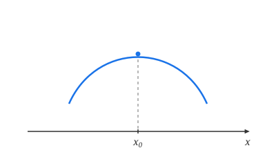
完全类似地可以定义 $f(x)$ 的极小值点和极小值（在不需要区分极大和极小的时候，我们将其统称为极值点和极值）.
从以上的定义可以知道：
1. 所谓"极大"和"极小"只是指在 $x_0$ 附近的一个局部范围中的函数值的大小关系，因而是一个局部性质.
2. 在一个区间内，$f(x)$ 的一个极小值完全有可能大于 $f(x)$ 的某些极大值（图 5.1.2 中的 $x_1$ 是极小值点，$x_2$ 是极大值点）.
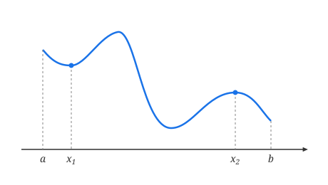
3. $f(x)$ 在一个区间中极值点可以有无数个. 如在 $(0, 1)$ 中考虑函数
$$f(x) = \sin\frac{1}{x},$$则 $x_n = \frac{2}{(2n+1)\pi}$ ($n = 0, 1, 2, \dots$) 都是 $f(x)$ 的极值点，当 $n$ 为偶数时为极大值点，而当 $n$ 为奇数时为极小值点.
4. 对极值点的定义并不牵涉函数的其他性质，如连续、可微等. 比如，读者容易证明，对于区间 $(0, 1)$ 上的 Riemann 函数
$$R(x) = \begin{cases} \frac{1}{q}, & \text{当 } x = \frac{p}{q} \text{ 为 } (0, 1) \text{ 上的既约分数}, \\ 0, & \text{当 } x \text{ 为 } (0, 1) \text{ 上的无理数}, \end{cases}$$$(0, 1)$ 中的每个有理点都是它的极大值点，每个无理点都是它的极小值点，而我们已经知道 Riemann 函数在每个有理点都不连续，在每个无理点都连续.
定理 5.1.1（Fermat 引理） 设 $x_0$ 是 $f(x)$ 的一个极值点，且 $f(x)$ 在 $x_0$ 处导数存在，则
$$f'(x_0) = 0.$$证 不妨设 $x_0$ 是 $f(x)$ 的极大值点. 由极大值点的定义，在 $x_0$ 的某个邻域 $O(x_0, \delta)$ 上 $f(x)$ 有定义，且满足
$$f(x) \le f(x_0), \quad x \in O(x_0, \delta).$$于是当 $x < x_0$ 时，有 $\frac{f(x) - f(x_0)}{x - x_0} \ge 0$；当 $x > x_0$ 时，有 $\frac{f(x) - f(x_0)}{x - x_0} \le 0$. 因为 $f(x)$ 在 $x_0$ 可导，所以
$$f'_-(x_0) = \lim_{x \to x_0^-} \frac{f(x) - f(x_0)}{x - x_0} \ge 0, \quad f'_+(x_0) = \lim_{x \to x_0^+} \frac{f(x) - f(x_0)}{x - x_0} \le 0,$$因此
$$f'(x_0) = 0.$$同理可证 $x_0$ 为极小值点的情况.
证毕Fermat 引理的几何意义非常明确：若曲线 $y = f(x)$ 在其极值点处可导，或者说在该点存在切线，那么这条切线必定平行于 $x$ 轴.
容易看出，当 $f(x)$ 可导时，条件 "$f'(x_0) = 0$" 只是 $x_0$ 为 $f(x)$ 的极值点的必要条件而并非是充分条件，这只要考虑函数 $f(x) = x^3$ 在 $x_0 = 0$ 处的情况就可以了.
Rolle 定理
由 Fermat 引理能够推出如下的 Rolle 定理：
定理 5.1.2（Rolle 定理） 设函数 $f(x)$ 在闭区间 $[a, b]$ 上连续，在开区间 $(a, b)$ 上可导，且 $f(a) = f(b)$，则至少存在一点 $\xi \in (a, b)$，使得
$$f'(\xi) = 0.$$证 由闭区间上连续函数的性质，存在 $\xi_1, \xi_2 \in [a, b]$，满足
$$f(\xi_1) = M \quad \text{和} \quad f(\xi_2) = m,$$其中 $M$ 和 $m$ 分别是 $f(x)$ 在 $[a, b]$ 上的最大值和最小值. 现分两种情况：
(1) $M = m$. 此时 $f(x)$ 在 $[a, b]$ 上恒为常数，结论显然成立.
(2) $M > m$. 这时 $M$ 和 $m$ 中至少有一个与 $f(a)$（亦即 $f(b)$）不相同，不妨设
$$M = f(\xi) > f(a) = f(b),$$因此 $\xi \in (a, b)$ 显然是极大值点，由 Fermat 引理
$$f'(\xi) = 0.$$ 证毕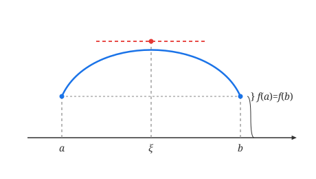
Rolle 定理的几何意义也很清楚：满足定理条件的函数一定在某一点存在一条与 $x$ 轴平行，亦即与曲线的两个端点的连线平行的切线（如图 5.1.3）.
定理的条件是充分的. 但是，三个条件中的任意一个不满足，都可能导致定理结论不成立. 如以下三个函数：
$$f_1(x) = \begin{cases} x, & x \in [0, 1), \\ 0, & x = 1, \end{cases}$$ $$f_2(x) = |1 - 2x|, \quad x \in [0, 1],$$ $$f_3(x) = x, \quad x \in [0, 1],$$容易验证，$f_1(x)$ 不满足在闭区间 $[0, 1]$ 上连续的条件，$f_2(x)$ 不满足在开区间 $(0, 1)$ 上可导的条件，而 $f_3(x)$ 不满足 $f_3(a) = f_3(b)$，尽管它们都分别满足其他两个条件，但它们在 $(0, 1)$ 中都不存在水平切线.
实际中，Rolle 定理常被用来讨论一个函数及其导函数在某范围中的零点问题.
例 5.1.1 如下定义的函数
$$P_n(x) = \frac{1}{2^n n!} \frac{\mathrm{d}^n}{\mathrm{d}x^n}(x^2 - 1)^n \quad (n = 0, 1, 2, \dots)$$被称为 $n$ 次 Legendre 多项式，证明 $P_n(x)$ 在 $(-1, 1)$ 上恰有 $n$ 个不同的根.
证 由高阶导数的 Leibniz 公式，容易知道，函数
$$q_{2n-m}(x) \equiv \frac{\mathrm{d}^m}{\mathrm{d}x^m}(x^2 - 1)^n \quad (m = 0, 1, 2, \dots, n - 1)$$中都含有 $(x^2 - 1)$ 因子，也就是说，当 $m < n$ 时，$q_{2n-m}(x)$ 都有实根 $-1$ 和 $1$.
当 $m = 0$ 时，$q_{2n}(x) = (x^2 - 1)^n$，因此 $-1$ 和 $1$ 是它仅有的两个相异的根. 由 Rolle 定理，$q_{2n-1}(x) = q'_{2n}(x)$ 在 $(-1, 1)$ 中必有一个根，我们将它记为 $x_{11}$.
这样，$q_{2n-1}(x)$ 在 $[-1, 1]$ 上就至少有三个相异的根：$-1, x_{11}$ 和 $1$. 再由 Rolle 定理，$q_{2n-2}(x) = q'_{2n-1}(x)$ 在 $(-1, x_{11})$ 和 $(x_{11}, 1)$ 中至少各有一个根，我们将它们分别记为 $x_{21}$ 和 $x_{22}$，则 $q_{2n-2}(x)$ 在 $[-1, 1]$ 上就至少有了四个相异的根：$-1, x_{21}, x_{22}$ 和 $1$.
反复使用 Rolle 定理，运用数学归纳法可以证明，$q_{2n-m}(x)$ 在 $[-1, 1]$ 上至少有 $m + 2$ 个相异的根 $-1, x_{m1}, x_{m2}, \dots, x_{mm}$ 和 $1$ ($m = 0, 1, 2, \dots, n - 1$).
令 $m = n - 1$，即知 $q_{n+1}(x)$ 在 $[-1, 1]$ 上至少有 $n + 1$ 个相异的根，最后再用一次 Rolle 定理，便知 $q_n(x) = q'_{n+1}(x)$ 在 $(-1, 1)$ 中至少有 $n$ 个相异的根.
由于 $q_n(x)$ 是 $n$ 次多项式，它在 $(-1, 1)$ 中至多只能有 $n$ 个根，因此，$q_n(x)$ 在 $(-1, 1)$ 中恰有 $n$ 个根.
因为 $P_n(x)$ 与 $q_n(x)$ 只相差一个系数，所以以上结论对于 $P_n(x)$ 也是成立的.
证毕以后我们会知道，Legendre 多项式是数学物理中一个重要的特殊函数.
Lagrange 中值定理
我们再来分析一下 Rolle 定理的三个条件. 对于讨论 $f(x)$ 在 $(a, b)$ 中的某些点上的切线性质来说，要求 $f(x)$ 在 $[a, b]$ 上连续且在 $(a, b)$ 上可导看来是必不可少的. 那么在保留这两个条件的前提下，若允许第三个条件即 $f(a) = f(b)$ 不成立，将会得出什么样的结果呢？
我们从几何上来直观地看一下（如图 5.1.4）. 从几何上讲，$f(a) = f(b)$ 只表示曲线 $y = f(x)$ 在 $[a, b]$ 上的那一阶的两个端点 $(a, f(a))$ 和 $(b, f(b))$ 与 $x$ 轴的距离相等. 因此，若 $f(a) \ne f(b)$，我们保持原点不动，适当旋转坐标轴，建立新的坐标系 $Ox'y'$，使 $x'$ 轴平行于 $(a, f(a))$ 和 $(b, f(b))$ 的连线. 在新的坐标系下，这段曲线就满足 Rolle 定理的全部条件，因此，存在着曲线上一点，使曲线在该点处的切线平行于 $x'$ 轴，即与 $(a, f(a))$ 和 $(b, f(b))$ 的连线平行.
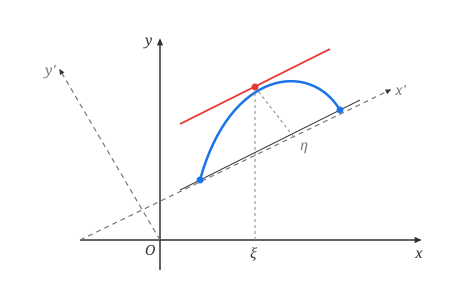
设该切点在原坐标系中的横坐标为 $x = \xi$，则切线的斜率 $f'(\xi)$ 与 $(a, f(a))$ 和 $(b, f(b))$ 的连线的斜率
$$\tan\theta = \frac{f(b) - f(a)}{b - a}$$相等. 这正是著名的 Lagrange 中值定理的结论，下面我们来严格地叙述和证明它.
定理 5.1.3（Lagrange 中值定理） 设函数 $f(x)$ 在闭区间 $[a, b]$ 上连续，在开区间 $(a, b)$ 上可导，则至少存在一点 $\xi \in (a, b)$，使得
$$f'(\xi) = \frac{f(b) - f(a)}{b - a}.$$证 作辅助函数
$$\varphi(x) = f(x) - f(a) - \frac{f(b) - f(a)}{b - a}(x - a), \quad x \in [a, b],$$由于函数 $f(x)$ 在闭区间 $[a, b]$ 上连续，在开区间 $(a, b)$ 上可导，因此函数 $\varphi(x)$ 也在闭区间 $[a, b]$ 上连续，在开区间 $(a, b)$ 上可导，并且有
$$\varphi(a) = \varphi(b) = 0,$$于是由 Rolle 定理，至少存在一点 $\xi \in (a, b)$，使得 $\varphi'(\xi) = 0$. 对 $\varphi(x)$ 的表达式求导并令 $\varphi'(\xi) = 0$，整理后便得到
$$f'(\xi) = \frac{f(b) - f(a)}{b - a}.$$ 证毕由于 $(a, f(a))$ 和 $(b, f(b))$ 的连线的方程为
$$y = \frac{f(b) - f(a)}{b - a}(x - a) + f(a),$$因此很容易理解辅助函数 $\varphi(x)$ 的几何意义，它与我们前面所讲的建立新的坐标系的思想有着异曲同工之妙，其区别仅在于，前面讲的是保持曲线不动，通过坐标系的运动（以原点为中心的旋转）使曲线的端点连线与坐标轴平行；而这里的证明是采取了坐标系不动，让曲线作变动（平移、旋转、压缩等）来达到同一目的.
作辅助函数是证明数学命题的重要方法之一，就证明 Lagrange 中值定理来讲，作出满足 Rolle 定理条件的辅助函数的途径有很多，比如，设函数 $\psi(x)$ 表示以曲线上的三个点 $(a, f(a))$、$(b, f(b))$ 和 $(x, f(x))$ 为顶点的三角形的面积（$x \in [a, b]$），则显然有
$$\psi(a) = \psi(b) = 0.$$同时，容易证明，$\psi(x)$ 亦是一个在 $[a, b]$ 连续，在 $(a, b)$ 可导的函数，因此 $\psi(x)$ 满足 Rolle 定理所有条件，由此同样可导出 Lagrange 中值定理.（具体过程留作习题.）
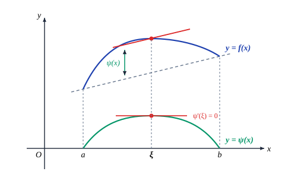
Lagrange 中值定理的结论
$$f'(\xi) = \frac{f(b) - f(a)}{b - a}, \quad \xi \in (a, b)$$一般称为 Lagrange 公式.
由于 $\xi \in (a, b)$，因而总可以找到某个 $\theta \in (0, 1)$，使
$$\xi = a + \theta(b - a),$$所以 Lagrange 公式也可以写成
$$f(b) - f(a) = f'(a + \theta(b - a))(b - a), \quad \theta \in (0, 1);$$若记 $a$ 为 $x$，$b - a$ 为 $\Delta x$，则上式又可以表示为
$$f(x + \Delta x) - f(x) = f'(x + \theta\Delta x)\Delta x, \quad \theta \in (0, 1).$$这是 Lagrange 公式最常用的两种形式.（最后一种形式即为
$$\Delta y = f'(x + \theta\Delta x)\Delta x,$$它给出了自变量、因变量的差分和函数的导数值的精确关系，请读者将它与公式
$$\Delta y = f'(x)\Delta x + o(\Delta x)$$加以比较.）
与 Rolle 定理相仿，Lagrange 中值定理的任何一个条件不满足时，定理结论就有可能不成立. 作为习题，请读者自行构造相应的例子.
用 Lagrange 中值定理讨论函数性质
由 Lagrange 中值定理可以推出一些重要的结果.
定理 5.1.4 若 $f(x)$ 在 $(a, b)$ 上可导且有 $f'(x) \equiv 0$，则 $f(x)$ 在 $(a, b)$ 上恒为常数.
证 设 $x_1$ 和 $x_2$ ($x_1 < x_2$) 是区间 $(a, b)$ 中任意两点，在 $[x_1, x_2]$ 上应用 Lagrange 中值定理，即知存在 $\xi \in (x_1, x_2) \subset (a, b)$，使得
$$f(x_2) - f(x_1) = f'(\xi)(x_2 - x_1),$$由条件 $f'(\xi) = 0$，便有
$$f(x_2) = f(x_1),$$由 $x_1$ 和 $x_2$ 的任意性，就得到
$$f(x) \equiv C, \quad x \in (a, b).$$ 证毕读者不难将这个结论推广到闭区间的情况.
由定理 5.1.4，容易推知，若两个可导函数 $f(x)$ 和 $g(x)$ 在区间 $(a, b)$ 中导数处处相等，则 $f(x)$ 和 $g(x)$ 在 $(a, b)$ 中至多相差一个常数，即
$$f(x) = g(x) + C.$$定理 5.1.4 说的是函数在区间中导数为零时的情况，下面来讨论函数在区间中导数保持定号时，函数所具有的性质. 为讨论方便，我们用 $I$ 表示某一区间，它可以是闭区间，开区间或半开半闭区间，而区间长度可以是有限的，也可以是无限的.
定理 5.1.5（一阶导数与单调性的关系） 设函数 $f(x)$ 在区间 $I$ 上可导，则 $f(x)$ 在 $I$ 上单调增加的充分必要条件是：对于任意 $x \in I$ 有 $f'(x) \ge 0$；
特别地，若对于任意 $x \in I$ 有 $f'(x) > 0$，则 $f(x)$ 在 $I$ 上严格单调增加.
证 充分性：设 $x_1, x_2 \in I$，$x_1 < x_2$. 在区间 $[x_1, x_2]$ 上对 $f(x)$ 应用 Lagrange 中值定理，即知存在 $\xi \in (x_1, x_2)$，使得
$$f(x_2) - f(x_1) = f'(\xi)(x_2 - x_1).$$由 $f'(\xi) \ge 0$（或 $f'(\xi) > 0$），即知 $f(x_2) \ge f(x_1)$（或 $f(x_2) > f(x_1)$），这说明函数 $f(x)$ 在 $I$ 单调增加或严格单调增加.
必要性：设 $x$ 是区间 $I$ 中任意一点，由于 $f(x)$ 在 $I$ 单调增加，所以对于任意 $x' \in I$ ($x' \ne x$) 成立
$$\frac{f(x') - f(x)}{x' - x} \ge 0,$$令 $x' \to x$，即得到 $f'(x) \ge 0$ ($x \in I$).
证毕类似地可以得到在 $I$ 上 $f'(x) \le 0$（或 $f'(x) < 0$）与 $f(x)$ 在 $I$ 上单调减少（或严格单调减少）之间的关系.
需要注意的是，若将定理 5.1.5 后半部分的条件减弱为"在 $I$ 中除了有限个点外，都有 $f'(x) > 0$"，则结论"$f(x)$ 在 $I$ 严格单调增加"依然成立. 因此"$f'(x) > 0$"只是 $f(x)$ 严格单调增加的充分条件而非必要条件，请读者自己举出例子.
下面我们引出函数凸性的概念.
让我们回忆一下函数 $y = e^x$ 和 $y = \ln x$ 的图像. 这两个函数在 $(0, +\infty)$ 都严格单调增加，但 $y = e^x$ 的图像是向下凸出的，而 $y = \ln x$ 的图像是向上凸出的. 推而广之，若函数 $f(x)$ 在区间 $I$ 上的图像类似于 $y = e^x$ 的形状，我们就称 $f(x)$ 在 $I$ 上是下凸的；若图像类似于 $y = \ln x$ 的形状，则称 $f(x)$ 在 $I$ 上是上凸的. 比如 $y = \sin x$ 在 $[0, \pi]$ 上是上凸的，而在 $[\pi, 2\pi]$ 上是下凸的；$y = x^3$ 在 $[0, +\infty)$ 上是下凸的，在 $(-\infty, 0]$ 上则是上凸的，如此等等.
那么如何来严格定义函数的凸性呢？以下凸的曲线 $y = f(x)$ 为例，仔细观察它的
图像（图 5.1.6）就会发现，在曲线上任意取两个不同的点 $(x_1, f(x_1))$ 和 $(x_2, f(x_2))$，以它们为端点的直线段总是位于曲线的上方. 由于区间 $(x_1, x_2)$ 中任意一点可表示成 $\lambda x_1 + (1-\lambda)x_2$，$\lambda \in (0, 1)$，过该点作一条垂直于 $x$ 轴的直线，则它与直线段交点的纵坐标 $\lambda f(x_1) + (1-\lambda)f(x_2)$ 必定大于它与曲线交点的纵坐标 $f(\lambda x_1 + (1-\lambda)x_2)$，由此我们引进相应凸函数的如下定义：
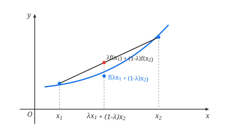
定义 5.1.2 设函数 $f(x)$ 在区间 $I$ 上定义，若对 $I$ 中的任意两点 $x_1$ 和 $x_2$，和任意 $\lambda \in (0, 1)$，都有
$$f(\lambda x_1 + (1-\lambda)x_2) \le \lambda f(x_1) + (1-\lambda)f(x_2),$$则称 $f(x)$ 是 $I$ 上的下凸函数.
若不等号严格成立，则称 $f(x)$ 在 $I$ 上是严格下凸函数.
类似地可以给出上凸函数和严格上凸函数的定义.
定理 5.1.6（二阶导数与凸性的关系） 设函数 $f(x)$ 在区间 $I$ 上二阶可导，则 $f(x)$ 在区间 $I$ 上是下凸函数的充分必要条件是：对于任意 $x \in I$ 有 $f''(x) \ge 0$.
特别地，若对于任意 $x \in I$ 有 $f''(x) > 0$，则 $f(x)$ 在 $I$ 上是严格下凸函数.
证 必要性：因为 $f(x)$ 在 $I$ 上是下凸函数，由定义可推出，对于任意 $x \in I$ 和 $\Delta x > 0$，若 $x + \Delta x$ 和 $x - \Delta x$ 都属于 $I$，则有（在定义 5.1.2 中取 $\lambda = 1/2$）
$$\frac{f(x + \Delta x) + f(x - \Delta x)}{2} \ge f\left(\frac{1}{2}(x + \Delta x) + \frac{1}{2}(x - \Delta x)\right) = f(x),$$所以
$$f(x + \Delta x) - f(x) \ge f(x) - f(x - \Delta x).$$对于任意 $x_1, x_2 \in I$，不妨设 $x_1 < x_2$，令 $\Delta x_n = \frac{x_2 - x_1}{n}$，反复利用上式，就得到
$$\begin{aligned} f(x_2) - f(x_2 - \Delta x_n) &\ge f(x_2 - \Delta x_n) - f(x_2 - 2\Delta x_n) \\ &\ge f(x_2 - 2\Delta x_n) - f(x_2 - 3\Delta x_n) \ge \cdots \\ &\ge f(x_2 - (n-1)\Delta x_n) - f(x_2 - n\Delta x_n) \\ &= f(x_1 + \Delta x_n) - f(x_1), \end{aligned}$$因此有
$$\frac{f(x_2 + (-\Delta x_n)) - f(x_2)}{-\Delta x_n} \ge \frac{f(x_1 + \Delta x_n) - f(x_1)}{\Delta x_n}.$$由于 $f(x)$ 在 $x_1$ 和 $x_2$ 可导，令 $n \to \infty$ 即 $\Delta x_n \to 0$，便得到
$$f'(x_2) \ge f'(x_1),$$即 $f'(x)$ 在 $I$ 上单调增加，因此 $f'(x)$ 在 $I$ 上的导数非负，即
$$f''(x) \ge 0, \quad x \in I.$$充分性：若在 $I$ 上 $f''(x) \ge 0$，则 $f'(x)$ 在 $I$ 上单调增加. 对 $I$ 上任意两点 $x_1, x_2$（不妨设 $x_1 < x_2$）及 $\lambda \in (0, 1)$，取 $x_0 = \lambda x_1 + (1-\lambda)x_2$，那么 $x_1 < x_0 < x_2$，且
$$x_1 - x_0 = (1-\lambda)(x_1 - x_2), \quad x_2 - x_0 = \lambda(x_2 - x_1).$$在 $[x_1, x_0]$ 和 $[x_0, x_2]$ 上分别应用 Lagrange 中值定理，则存在 $\eta_1 \in (x_1, x_0)$ 和 $\eta_2 \in (x_0, x_2)$，使得
$$f(x_1) - f(x_0) = f'(\eta_1)(x_1 - x_0) = -(1-\lambda)f'(\eta_1)(x_2 - x_1),$$ $$f(x_2) - f(x_0) = f'(\eta_2)(x_2 - x_0) = \lambda f'(\eta_2)(x_2 - x_1).$$因此利用 $f'(x)$ 在 $I$ 上的单调增加性质得
$$f(x_1) - f(x_0) \ge -(1-\lambda)f'(x_0)(x_2 - x_1),$$ $$f(x_2) - f(x_0) \ge \lambda f'(x_0)(x_2 - x_1).$$分别用 $\lambda$ 和 $1-\lambda$ 乘以上两式并相加得
$$\lambda f(x_1) + (1-\lambda)f(x_2) - f(x_0) \ge 0,$$即
$$f(\lambda x_1 + (1-\lambda)x_2) \le \lambda f(x_1) + (1-\lambda)f(x_2).$$由定义，$f(x)$ 在 $I$ 上是下凸函数.
定理的后半部分证明留给读者考虑.
证毕类似地可以得到在 $I$ 上 $f''(x) \le 0$（或 $f''(x) < 0$）与 $f(x)$ 在 $I$ 上上凸（或严格上凸）之间的关系.
需要注意的是，若将定理 5.1.6 后半部分的条件减弱为"在 $I$ 中除了有限个点外，都有 $f''(x) > 0$"，结论"$f(x)$ 在 $I$ 上是严格下凸函数"依然成立. 因此"$f''(x) > 0$"只是 $f(x)$ 严格下凸的充分条件而非必要条件，请读者自己举出例子.
根据定理 5.1.6，读者容易验证上面所述的关于曲线 $y = e^x, y = \ln x, y = \sin x, y = x^3$ 等函数的凸性性质. 特别地，正弦曲线 $y = \sin x$ 上的点 $(k\pi, 0)$ 和三次曲线 $y = x^3$ 上的点 $(0, 0)$ 具有这样一个共同的性质：曲线在该点两侧的凸性相反，也就是说，它们是曲线上凸与下凸的分界点. 我们称这样的点为曲线的拐点.
拐点位置的确定对于函数作图的准确性起着重要的作用，为确定拐点的位置，我们有下述定理：
定理 5.1.7 设 $f(x)$ 在区间 $I$ 上连续，$(x_0 - \delta, x_0 + \delta) \subset I$.
(1) 若在 $(x_0 - \delta, x_0)$ 与 $(x_0, x_0 + \delta)$ 上曲线的凸性相反，则 $(x_0, f(x_0))$ 是曲线的拐点；
(2) 若 $(x_0, f(x_0))$ 是曲线的拐点，且 $f(x)$ 在 $x_0$ 二阶可导，则 $f''(x_0) = 0$.
证 结论 (1) 是显然的. 现证结论 (2).
不妨设在 $(x_0 - \delta, x_0)$ 上曲线是下凸的，在 $(x_0, x_0 + \delta)$ 上是上凸的. 由 $f(x)$ 二阶可导的假设与定理 5.1.6，可知在 $(x_0 - \delta, x_0)$ 上 $f''(x) \ge 0$，在 $(x_0, x_0 + \delta)$ 上 $f''(x) \le 0$. 因为 $f''(x_0)$ 存在，取极限即有 $f''(x_0) \ge 0$ 且 $f''(x_0) \le 0$，或者对 $f'(x)$ 在 $x_0$ 处应用 Fermat 引理，得到 $f''(x_0) = 0$.
证毕需要注意的是，定理 5.1.7 (2) 给出的是二阶可导函数曲线的拐点所满足的必要条件，而非充分条件，例如曲线 $y = x^4$ 上的 $(0, 0)$ 点就满足条件 $f''(0) = 0$，但它不是拐点. 另一方面，若函数二阶不可导，也可以存在拐点，例如曲线 $y = x^{\frac{1}{3}}$ 上的 $(0, 0)$ 点就是曲线的拐点. 因此，当我们通过对 $f(x)$ 求二阶导数来确定拐点的话，既要考虑满足
$f''(x) = 0$ 的点，又要考虑 $f''(x)$ 不存在的点.
例 5.1.2 求曲线 $y = \sqrt[3]{x^2}(x^2 - 4x)$ 的拐点.
解 $y = \sqrt[3]{x^2}(x^2 - 4x)$ 的定义域是 $(-\infty, +\infty)$. 经计算，得到
$$y'' = \frac{40}{9\sqrt[3]{x}}(x - 1).$$由定理 5.1.7，我们只需考虑满足 $y'' = 0$ 与使 $y''$ 不存在的点，即 $x = 1$ 与 $x = 0$. 由于在 $x = 1$ 的左右邻域与 $x = 0$ 的左右邻域，$y''$ 都具有相反的符号，可知 $(1, -3)$ 与 $(0, 0)$ 都是曲线 $y = \sqrt[3]{x^2}(x^2 - 4x)$ 的拐点.
现在我们可以对函数 $y = e^x$ 和 $y = \ln x$ 当 $x \to +\infty$ 时函数值趋于无穷大的速率大相径庭有一点粗略的领会了：这两个函数当 $x > 0$ 时都是严格单调增加，但 $y = e^x$ 是严格下凸的，由定理 5.1.7，它的一阶导数也是严格单调增加的，因而函数值增加的速度随着 $x$ 的增加而越来越快；而 $y = \ln x$ 却是严格上凸的，因此它的一阶导数是严格单调减少的，所以尽管它的函数值仍保持严格单调增加的趋势，但速度却随着 $x$ 的增加而越来越慢了.
需要指出的是，利用数学归纳法从下凸（上凸）函数的定义出发，可以直接证明如下的结果：
定理 5.1.8（Jensen 不等式） 若 $f(x)$ 为区间 $I$ 上的下凸（上凸）函数，则对于任意 $x_i \in I$ 和满足 $\sum_{i=1}^n \lambda_i = 1$ 的 $\lambda_i > 0$ ($i = 1, 2, \dots, n$)，成立
$$f\left(\sum_{i=1}^n \lambda_i x_i\right) \le \sum_{i=1}^n \lambda_i f(x_i) \quad \left( f\left(\sum_{i=1}^n \lambda_i x_i\right) \ge \sum_{i=1}^n \lambda_i f(x_i) \right).$$特别地，取 $\lambda_i = \frac{1}{n}$ ($i = 1, 2, \dots, n$)，就有
$$f\left(\frac{1}{n}\sum_{i=1}^n x_i\right) \le \frac{1}{n}\sum_{i=1}^n f(x_i) \quad \left( f\left(\frac{1}{n}\sum_{i=1}^n x_i\right) \ge \frac{1}{n}\sum_{i=1}^n f(x_i) \right).$$证明留作习题.
Lagrange 中值定理以及上述几个由此推出的定理具有重要的意义，下面我们来看几个例子.
例 5.1.3 证明不等式
$$|\arctan a - \arctan b| \le |a - b|.$$证 显然，$f(x) = \arctan x$ 在任意区间 $[a, b]$ 上满足 Lagrange 中值定理条件，所以，存在 $\xi \in (a, b)$，满足
$$|\arctan a - \arctan b| = |f'(\xi)| \cdot |a - b| = \left| \frac{1}{1 + \xi^2} \right| \cdot |a - b|,$$即
$$|\arctan a - \arctan b| \le |a - b|.$$ 证毕例 5.1.4 证明恒等式
$$\arctan\frac{1+x}{1-x} - \arctan x = \begin{cases} \frac{\pi}{4}, & x < 1, \\ -\frac{3\pi}{4}, & x > 1. \end{cases}$$证 令 $f(x) = \arctan\frac{1+x}{1-x} - \arctan x$，则当 $x \ne 1$ 时，有
$$f'(x) = \frac{1}{1 + \left(\frac{1+x}{1-x}\right)^2} \left(\frac{1+x}{1-x}\right)' - \frac{1}{1+x^2} = \frac{1}{1 + \left(\frac{1+x}{1-x}\right)^2} \cdot \frac{2}{(1-x)^2} - \frac{1}{1+x^2} = 0,$$由定理 5.1.4 知，在任何不含 $x=1$ 的区间，$\arctan\frac{1+x}{1-x} - \arctan x \equiv C$.
当 $x < 1$ 时，令 $x = 0$，即得到常数 $C = \frac{\pi}{4}$；当 $x > 1$ 时，令 $x \to +\infty$，即得到常数 $C = -\frac{3\pi}{4}$，因此
$$\arctan\frac{1+x}{1-x} - \arctan x = \begin{cases} \frac{\pi}{4}, & x < 1, \\ -\frac{3\pi}{4}, & x > 1. \end{cases}$$ 证毕下面来看一个有趣的问题，它牵涉两个最重要的无理数——$\pi$ 和 $e$.
例 5.1.5 判别 $e^\pi$ 与 $\pi^e$ 的大小关系.
我们来考虑更一般的情况：设 $a$ 和 $b$ 是两个不同的正实数，在什么条件下成立 $a^b > b^a$？两边取对数后再整理，即知上式等价于
$$\frac{\ln a}{a} > \frac{\ln b}{b},$$所以，判别 $a^b$ 与 $b^a$ 的大小关系可以通过确定函数 $\frac{\ln x}{x}$ 的单调情况来得到.
解 记 $f(x) = \frac{\ln x}{x}$，则
$$f'(x) = \frac{1 - \ln x}{x^2} \begin{cases} < 0, & x > e, \\ > 0, & 0 < x < e. \end{cases}$$由定理 5.1.5，$f(x)$ 在 $[e, +\infty)$ 严格单调减少. 因此
$$\frac{\ln e}{e} > \frac{\ln \pi}{\pi},$$即可判别出
$$e^\pi > \pi^e.$$对于比较复杂的问题，有时需要求导多次方能奏效.
例 5.1.6 证明不等式
$$\sin x > x - \frac{x^3}{6} \quad (x > 0).$$我们来分析一下. 要证明 $x > 0$ 时 $f(x) = \sin x - x + \frac{x^3}{6} > 0$，由于 $f(0) = 0$，因此只要能证明 $f(x)$ 在 $[0, +\infty)$ 上严格单调增加，或者说 $f'(x) > 0$ ($x > 0$) 就可以了.
对 $f(x)$ 求导，得到
$$f'(x) = \cos x - 1 + \frac{x^2}{2},$$一下子仍无法判断是否一定有 $f'(x) > 0$，但注意到 $f'(0) = 0$，因此只要能证明 $f'(x)$ 在 $x > 0$ 严格单调增加，或者说 $f''(x) > 0$ 就可以了. 由于
$$f''(x) = x - \sin x,$$而 $x - \sin x > 0$ 是我们在极限论中已知的结果，把这个过程倒退回去，就能证得结论.
证 令 $f(x) = \sin x - x + \frac{x^3}{6}$，则当 $x > 0$ 时，有
$$f''(x) = [f'(x)]' = x - \sin x > 0,$$所以 $f'(x)$ 在 $x \ge 0$ 严格单调增加，即当 $x > 0$ 时，有
$$f'(x) = \cos x - 1 + \frac{x^2}{2} > f'(0) = 0.$$由此可知 $f(x)$ 在 $[0, +\infty)$ 也是严格单调增加的，这样，当 $x > 0$ 时，便成立
$$f(x) = \sin x - x + \frac{x^3}{6} > f(0) = 0.$$ 证毕例 5.1.7 证明不等式
$$a\ln a + b\ln b \ge (a+b)[\ln(a+b) - \ln 2] \quad (a, b > 0).$$证 令 $f(x) = x\ln x$，则
$$f'(x) = \ln x + 1, \quad f''(x) = \frac{1}{x} > 0 \quad (x > 0).$$由定理 5.1.6，$f(x)$ 在 $(0, +\infty)$ 上是严格下凸的，因而对任意 $a, b > 0$，都成立
$$\frac{f(a) + f(b)}{2} \ge f\left(\frac{a+b}{2}\right)$$（请读者想想为什么等号可能成立），即
$$\frac{a\ln a + b\ln b}{2} \ge \frac{a+b}{2} \ln\frac{a+b}{2}.$$这就是要证明的不等式.
证毕由 Jensen 不等式，可知上例的结论还可加强为：对于任意的 $x_i > 0$ ($i = 1, 2, \dots, n$)，成立
$$x_1\ln x_1 + x_2\ln x_2 + \cdots + x_n\ln x_n \ge (x_1 + x_2 + \cdots + x_n)[\ln(x_1 + x_2 + \cdots + x_n) - \ln n].$$例 5.1.8 设 $a, b \ge 0$，$p, q$ 为满足 $\frac{1}{p} + \frac{1}{q} = 1$ 的正数. 证明
$$ab \le \frac{1}{p}a^p + \frac{1}{q}b^q.$$证 当 $a, b$ 其中之一为 $0$ 时，上式显然成立.
现证 $a, b > 0$ 的情形. 考虑函数 $f(x) = \ln x$ ($x > 0$). 由于在 $(0, +\infty)$ 上 $f''(x) = -\frac{1}{x^2} < 0$，所以 $f(x)$ 在 $(0, +\infty)$ 上是严格上凸函数. 于是由定义得
$$\frac{1}{p} f(a^p) + \frac{1}{q} f(b^q) \le f\left(\frac{1}{p}a^p + \frac{1}{q}b^q\right)$$（请读者想想为什么等号可能成立），即
$$\ln(ab) = \frac{1}{p}\ln a^p + \frac{1}{q}\ln b^q \le \ln\left(\frac{1}{p}a^p + \frac{1}{q}b^q\right).$$于是，利用 $f(x) = \ln x$ 在 $(0, +\infty)$ 上的单调增加性即得
$$ab \le \frac{1}{p}a^p + \frac{1}{q}b^q \quad (a, b > 0).$$ 证毕注 利用 $\ln x$ 在 $(0, +\infty)$ 上的严格上凸性，由 Jensen 不等式还可得到，对于任意正数 $x_1, x_2, \dots, x_n$，成立
$$\frac{\ln x_1 + \ln x_2 + \cdots + \ln x_n}{n} \le \ln\left(\frac{x_1 + x_2 + \cdots + x_n}{n}\right),$$由此得到
$$\sqrt[n]{x_1 x_2 \cdots x_n} \le \frac{x_1 + x_2 + \cdots + x_n}{n}.$$我们利用微分学又一次证明了这个熟知的不等式.
Cauchy 中值定理
最后，我们给出一个形式更加一般的中值定理.
定理 5.1.9（Cauchy 中值定理） 设 $f(x)$ 和 $g(x)$ 都在闭区间 $[a, b]$ 上连续，在开区间 $(a, b)$ 上可导，且对于任意 $x \in (a, b)$，$g'(x) \ne 0$. 则至少存在一点 $\xi \in (a, b)$，使得
$$\frac{f'(\xi)}{g'(\xi)} = \frac{f(b) - f(a)}{g(b) - g(a)}.$$显然，当 $g(x) = x$ 时，上式即为 Lagrange 公式，所以 Lagrange 中值定理是 Cauchy 中值定理的特殊情况.
但若换一个角度，将 $f(t)$ 和 $g(t)$ 看成 $xy$ 平面上某条曲线 $y = F(x)$ 的参数方程，即
$$y = F(x) \quad \text{可以表示为} \quad \begin{cases} x = g(t), \\ y = f(t), \end{cases} \quad t \in [a, b],$$如图 5.1.7，易知 $y = F(x)$ 在 $[g(a), g(b)]$（或 $[g(b), g(a)]$）上连续，在 $(g(a), g(b))$（或 $(g(b), g(a))$）上可导，由 Lagrange 中值定理的几何意义，存在曲线上一点 $(\eta, F(\eta))$，过该点的切线斜率 $F'(\eta)$ 等于曲线两端连线的斜率 $\frac{f(b) - f(a)}{g(b) - g(a)}$. 设 $x = \eta$ 对应于 $t = \xi \in (a, b)$，则
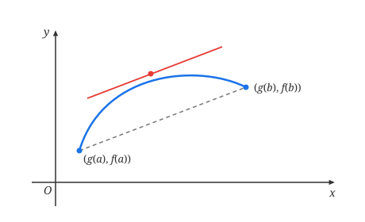
由参数形式函数的求导公式，有
$$F'(\eta) = \frac{f'(\xi)}{g'(\xi)} = \frac{f(b) - f(a)}{g(b) - g(a)}.$$所以，Cauchy 中值定理也可以看成是 Lagrange 中值定理的参数表达形式.
可以采用与证明 Lagrange 中值定理相仿的方法来证明 Cauchy 中值定理，辅助函数的构造及其几何意义都是类似的（留作习题），下面我们采用完全不同的思路来证明它.
证 由闭区间上连续函数的性质，以及 $g(x)$ 在 $[a, b]$ 上连续，在 $(a, b)$ 上可导，且导数恒不为零，读者不难用反证法证明，$g(x)$ 在 $[a, b]$ 上严格单调（留作习题）. 不妨设 $g(x)$ 严格单调增加.
记 $g(a) = \alpha, g(b) = \beta$，由反函数存在定理和反函数导数存在定理，在 $[\alpha, \beta]$ 上存在 $g(x)$ 的反函数 $g^{-1}(y)$，$g^{-1}(y)$ 在 $[\alpha, \beta]$ 上连续，在 $(\alpha, \beta)$ 上可导，其导数
$$[g^{-1}(y)]' = \frac{1}{g'(x)},$$并且 $g^{-1}(y)$ 在 $[\alpha, \beta]$ 上也是严格单调增加的.
考虑 $[\alpha, \beta]$ 上的复合函数 $F(y) = f(g^{-1}(y))$，由定理条件和以上讨论，即知 $F(y)$ 在 $[\alpha, \beta]$ 上满足 Lagrange 中值定理条件，于是，存在 $\eta \in (\alpha, \beta)$，使得
$$F'(\eta) = \frac{F(\beta) - F(\alpha)}{\beta - \alpha} = \frac{f(g^{-1}(\beta)) - f(g^{-1}(\alpha))}{\beta - \alpha} = \frac{f(b) - f(a)}{g(b) - g(a)}.$$由 $g(x)$ 和 $g^{-1}(y)$ 的关系，在 $(a, b)$ 中一定存在一点 $\xi$，满足 $g(\xi) = \eta$，于是
$$\begin{aligned} F'(\eta) &= \left.\{f(g^{-1}(y))\}'\right|_{y=\eta} \\ &= \left.\left\{ f'(g^{-1}(y)) \cdot [g^{-1}(y)]' \right\}\right|_{y=\eta} \\ &= \left.\left\{ f'(x) \cdot \frac{1}{g'(x)} \right\}\right|_{x=g^{-1}(\eta)=\xi} = \frac{f'(\xi)}{g'(\xi)}. \end{aligned}$$代入上式就得到了定理结论.
证毕例 5.1.9 设 $f(x)$ 在 $[1, +\infty)$ 上连续，在 $(1, +\infty)$ 上可导，已知函数 $e^{-x^2}f'(x)$ 在 $(1, +\infty)$ 上有界，证明函数 $x e^{-x^2}f(x)$ 在 $(1, +\infty)$ 上也有界.
证 设 $|e^{-x^2}f'(x)| \le M, x \in (1, +\infty)$. 首先对于函数 $e^{-x^2}f(x), x \in (1, +\infty)$，应用 Cauchy 中值定理，可以证明它是有界的：
$$\begin{aligned} \left| \frac{f(x)}{e^{x^2}} \right| &\le \left| \frac{f(x) - f(1)}{e^{x^2}} \right| + \left| \frac{f(1)}{e^{x^2}} \right| < \left| \frac{f(x) - f(1)}{e^{x^2} - e} \right| + \frac{|f(1)|}{e} \\ &= \left| \frac{f'(\xi)}{2\xi e^{\xi^2}} \right| + \frac{|f(1)|}{e} < \left| \frac{f'(\xi)}{2e^{\xi^2}} \right| + \frac{|f(1)|}{e} \le \frac{M}{2} + \frac{|f(1)|}{e}, \end{aligned}$$其中 $\xi \in (1, x)$. 进一步，对于函数 $x e^{-x^2}f(x), x \in (1, +\infty)$，也有
$$\left| \frac{x f(x)}{e^{x^2}} \right| \le \left| \frac{x f(x) - f(1)}{e^{x^2}} \right| + \left| \frac{f(1)}{e^{x^2}} \right| < \left| \frac{x f(x) - 1 \cdot f(1)}{e^{x^2} - e} \right| + \frac{|f(1)|}{e}$$ $$= \left| \frac{\xi f'(\xi) + f(\xi)}{2\xi e^{\xi^2}} \right| + \frac{|f(1)|}{e} < \left| \frac{f'(\xi)}{2e^{\xi^2}} \right| + \left| \frac{f(\xi)}{2e^{\xi^2}} \right| + \frac{|f(1)|}{e} < \frac{3M}{4} + \frac{3|f(1)|}{2e}.$$ 证毕习 题 5.1
- 设 $f'_+(x_0) > 0, f'_-(x_0) < 0$，证明 $x_0$ 是 $f(x)$ 的极小值点.
- （Darboux 定理）设 $f(x)$ 在 $(a, b)$ 上可导，$x_1, x_2 \in (a, b)$. 如果 $f'(x_1) \cdot f'(x_2) < 0$，证明在 $x_1$ 和 $x_2$ 之间至少存在一点 $\xi$，使得 $f'(\xi) = 0$.
- 举例说明 Lagrange 中值定理的任何一个条件不满足时，定理结论就有可能不成立.
- 设函数 $f(x)$ 在 $[a, b]$ 上连续，在 $(a, b)$ 上可微. 利用辅助函数 $$\psi(x) = \begin{vmatrix} x & f(x) & 1 \\ a & f(a) & 1 \\ b & f(b) & 1 \end{vmatrix}$$ 证明 Lagrange 中值定理，并说明 $\psi(x)$ 的几何意义.
- 设函数 $f(x)$ 和 $g(x)$ 在 $[a, b]$ 上连续，在 $(a, b)$ 上可导，证明在 $(a, b)$ 内存在一点 $\xi$，使得 $$\begin{vmatrix} f(a) & f(b) \\ g(a) & g(b) \end{vmatrix} = (b - a) \begin{vmatrix} f(a) & f'(\xi) \\ g(a) & g'(\xi) \end{vmatrix}.$$
- 设非线性函数 $f(x)$ 在 $[a, b]$ 上连续，在 $(a, b)$ 上可导，则在 $(a, b)$ 上至少存在一点 $\eta$，满足 $$|f'(\eta)| > \left| \frac{f(b) - f(a)}{b - a} \right|,$$ 并说明它的几何意义.
- 求极限 $\lim_{n \to \infty} n^2 \left( \arctan\frac{a}{n} - \arctan\frac{a}{n+1} \right)$，其中 $a \ne 0$ 为常数.
- 用 Lagrange 公式证明不等式：
- $|\sin x - \sin y| \le |x - y|$；
- $n y^{n-1}(x - y) < x^n - y^n < n x^{n-1}(x - y) \quad (n > 1, x > y > 0)$；
- $\frac{b - a}{b} < \ln\frac{b}{a} < \frac{b - a}{a} \quad (b > a > 0)$；
- $e^x > 1 + x \quad (x > 0)$.
- 设 $f(x)$ 在 $[a, b]$ 上定义，且对任何实数 $x_1$ 和 $x_2$，满足 $$|f(x_1) - f(x_2)| \le (x_1 - x_2)^2,$$ 证明 $f(x)$ 在 $[a, b]$ 上恒为常数.
- 证明恒等式：
- $\arcsin x + \arccos x = \frac{\pi}{2}, \quad x \in [0, 1]$；
- $3\arccos x - \arccos(3x - 4x^3) = \pi, \quad x \in \left[ -\frac{1}{2}, \frac{1}{2} \right]$；
- $2\arctan x + \arcsin\frac{2x}{1+x^2} = \pi, \quad x \in [1, +\infty)$.
- 设函数 $f(x)$ 在 $[a, b]$ 上连续，在 $(a, b)$ 上可导. 证明：若 $(a, b)$ 中除至多有限个点有 $f'(x) = 0$ 之外，都有 $f'(x) > 0$，则 $f(x)$ 在 $[a, b]$ 上严格单调增加；同时举例说明，其逆命题不成立.
- 证明不等式：
- $\frac{2}{\pi}x < \sin x < x, \quad x \in \left( 0, \frac{\pi}{2} \right)$；
- $3 - \frac{1}{x} < 2\sqrt{x}, \quad x > 1$；
- $x - \frac{x^2}{2} < \ln(1+x) < x, \quad x > 0$；
- $\tan x + 2\sin x > 3x, \quad x \in \left( 0, \frac{\pi}{2} \right)$；
- $\frac{1}{2^{p-1}} \le x^p + (1-x)^p \le 1, \quad x \in [0, 1], p > 1$；
- $\frac{\tan x}{x} > \frac{x}{\sin x}, \quad x \in \left( 0, \frac{\pi}{2} \right)$.
- 证明：在 $(0, 1)$ 上成立
- $(1+x)\ln^2(1+x) < x^2$；
- $\frac{1}{\ln 2} - 1 < \frac{1}{\ln(1+x)} - \frac{1}{x} < \frac{1}{2}$.
- 对于每个正整数 $n$ ($n \ge 2$)，证明方程 $$x^n + x^{n-1} + \cdots + x^2 + x = 1$$ 在 $(0, 1)$ 内必有唯一的实根 $x_n$，并求极限 $\lim_{n \to \infty} x_n$.
- 设函数 $f(x)$ 在 $[0, 1]$ 上连续，在 $(0, 1)$ 上可导，且 $f(0) = f(1) = 0, f\left(\frac{1}{2}\right) = 1$. 证明：
- 存在 $\xi \in \left( \frac{1}{2}, 1 \right)$，使得 $f(\xi) = \xi$；
- 对于任意实数 $\lambda$，必存在 $\eta \in (0, \xi)$，使得 $$f'(\eta) - \lambda [f(\eta) - \eta] = 1.$$
- 设函数 $f(x)$ 和 $g(x)$ 在 $[a, b]$ 上连续，在 $(a, b)$ 上可导，且 $g'(x) \ne 0$ ($x \in (a, b)$). 分别利用辅助函数 $$\varphi(x) = f(x) - f(a) - \frac{f(b) - f(a)}{g(b) - g(a)} [g(x) - g(a)]$$ 和 $$\psi(x) = \begin{vmatrix} g(x) & f(x) & 1 \\ g(a) & f(a) & 1 \\ g(b) & f(b) & 1 \end{vmatrix},$$ 证明 Cauchy 中值定理，并说明 $\varphi(x)$ 和 $\psi(x)$ 的几何意义.
- 设 $a, b > 0, f(x)$ 在 $[a, b]$ 上连续，在 $(a, b)$ 上可导，证明存在 $\xi \in (a, b)$，使得 $$2\xi [f(b) - f(a)] = (b^2 - a^2)f'(\xi).$$
- 设 $a, b > 0$，证明存在 $\xi \in (a, b)$，使得 $$a e^b - b e^a = (1 - \xi)e^\xi (a - b).$$
- 设 $f(x)$ 在 $[a, b]$ 上连续 ($ab > 0$)，在 $(a, b)$ 上可导，证明存在 $\xi \in (a, b)$，使得 $$\frac{1}{b - a} \begin{vmatrix} a & b \\ f(a) & f(b) \end{vmatrix} = \xi f'(\xi) - f(\xi).$$
- 设 $f(x)$ 在 $[1, +\infty)$ 上连续，在 $(1, +\infty)$ 上可导，已知函数 $e^{-x}f'(x)$ 在 $(1, +\infty)$ 上有界，证明函数 $e^{-x}f(x)$ 在 $(1, +\infty)$ 上也有界.
- 设 $f'(x)$ 在 $(0, a]$ 上连续，且存在有限极限 $\lim_{x \to 0^+} \sqrt{x}f'(x)$，证明 $f(x)$ 在 $(0, a]$ 上一致连续.
- 设 $f(x)$ 在 $x=0$ 的某邻域内有 $n$ 阶导数，且 $f(0) = f'(0) = \cdots = f^{(n-1)}(0) = 0$，用 Cauchy 中值定理证明 $$\frac{f(x)}{x^n} = \frac{f^{(n)}(\theta x)}{n!} \quad (0 < \theta < 1).$$
- 证明不等式：
- $\frac{x^n + y^n}{2} \ge \left( \frac{x+y}{2} \right)^n, \quad x, y > 0, n > 1$；
- $\frac{e^x + e^y}{2} > e^{\frac{x+y}{2}}, \quad x \ne y$.
- （Jensen 不等式）设 $f(x)$ 为 $[a, b]$ 上的连续下凸函数，证明对于任意 $x_i \in [a, b]$ 和 $\lambda_i > 0$ ($i = 1, 2, \dots, n$)，$\sum_{i=1}^n \lambda_i = 1$，成立 $$f\left(\sum_{i=1}^n \lambda_i x_i\right) \le \sum_{i=1}^n \lambda_i f(x_i).$$
- 利用上题结论证明：对于正数 $a, b, c$ 成立 $$(abc)^{\frac{a+b+c}{3}} \le a^a b^b c^c.$$
- 设 $f(x)$ 在 $(a, +\infty)$ 上可导，并且 $\lim_{x \to +\infty} f'(x) = 0$，证明 $\lim_{x \to +\infty} \frac{f(x)}{x} = 0$.
- 设 $f(x)$ 在 $[a, b]$ 连续，在 $(a, b)$ 二阶可导，证明存在 $\eta \in (a, b)$，成立 $$f(b) + f(a) - 2f\left(\frac{a+b}{2}\right) = \left(\frac{b-a}{2}\right)^2 f''(\eta).$$
§2 L'Hospital 法则
待定型极限和 L'Hospital 法则
在计算一个分式函数的极限时，常常会遇到分子分母都趋于零或都趋于无穷大的情况，由于这时无法使用"商的极限等于极限的商"的法则，运算将遇到很大的困难. 事实上，这时极限可能存在，也可能不存在. 当极限存在时，极限的值也会有各种各样的可能，比如熟知的
$$\lim_{x \to \infty} \frac{a_n x^n + a_{n-1}x^{n-1} + \cdots + a_1 x + a_0}{b_m x^m + b_{m-1}x^{m-1} + \cdots + b_1 x + b_0} = \begin{cases} \frac{a_n}{b_n}, & n = m, \\ 0, & n < m, \\ \infty, & n > m \end{cases}$$就是一个分子分母都趋于无穷大的例子. 我们将这种类型的极限称为 $\frac{0}{0}$ 待定型或 $\frac{\infty}{\infty}$ 待定型，简称 $\frac{0}{0}$ 型或 $\frac{\infty}{\infty}$ 型.
待定型极限除了以上两种类型以外，还有 $0 \cdot \infty$ 型、$\infty - \infty$ 型、$\infty^0$ 型、$1^\infty$ 型、$0^0$ 型等几种. 但以后将会看到，后面的几种类型都可以化成前面两种类型进行计算，所以我们这里主要讨论如何求 $\frac{0}{0}$ 型和 $\frac{\infty}{\infty}$ 型的极限.
定理 5.2.1（L'Hospital 法则） 设函数 $f(x)$ 和 $g(x)$ 在 $(a, a+d]$ 上可导（$d$ 是某个正常数），且 $g'(x) \ne 0$. 若此时有
$$\lim_{x \to a^+} f(x) = \lim_{x \to a^+} g(x) = 0$$或
$$\lim_{x \to a^+} g(x) = \infty,$$且 $\lim_{x \to a^+} \frac{f'(x)}{g'(x)}$ 存在（可以是有限数或 $\infty$），则成立
$$\lim_{x \to a^+} \frac{f(x)}{g(x)} = \lim_{x \to a^+} \frac{f'(x)}{g'(x)}.$$证 这里仅对 $\lim_{x \to a^+} \frac{f'(x)}{g'(x)} = A$ 为有限数时来证明，当 $A$ 为无穷大时的证明过程是类似的（留作习题）.
先证明 $\lim_{x \to a^+} f(x) = \lim_{x \to a^+} g(x) = 0$ 的情况.
由于函数在 $x = a$ 处的值与 $x \to a^+$ 时的极限无关，因此可以补充定义
$$f(a) = g(a) = 0,$$使得 $f(x)$ 和 $g(x)$ 在 $[a, a+d]$ 上连续. 这样，经补充定义后的函数 $f(x)$ 和 $g(x)$ 在 $[a, a+d]$ 上满足 Cauchy 中值定理的条件，因而对于任意 $x \in (a, a+d)$，存在 $\xi \in (a, x) \subset (a, a+d)$，满足
$$\frac{f(x)}{g(x)} = \frac{f(x) - f(a)}{g(x) - g(a)} = \frac{f'(\xi)}{g'(\xi)}.$$当 $x \to a^+$ 时显然有 $\xi \to a^+$. 由于 $\lim_{x \to a^+} \frac{f'(x)}{g'(x)}$ 存在，两端令 $x \to a^+$，即有
$$\lim_{x \to a^+} \frac{f(x)}{g(x)} = \lim_{\xi \to a^+} \frac{f'(\xi)}{g'(\xi)} = \lim_{x \to a^+} \frac{f'(x)}{g'(x)}.$$下面证明 $\lim_{x \to a^+} g(x) = \infty$ 时的情况.
$\frac{f(x)}{g(x)}$ 可以改写为
$$\begin{aligned} \frac{f(x)}{g(x)} &= \frac{f(x) - f(x_0)}{g(x)} + \frac{f(x_0)}{g(x)} \\ &= \frac{f(x) - f(x_0)}{g(x) - g(x_0)} \cdot \frac{g(x) - g(x_0)}{g(x)} + \frac{f(x_0)}{g(x)} \\ &= \left[ 1 - \frac{g(x_0)}{g(x)} \right] \frac{f(x) - f(x_0)}{g(x) - g(x_0)} + \frac{f(x_0)}{g(x)}. \end{aligned}$$于是，
$$\begin{aligned} \frac{f(x)}{g(x)} - A &= \left[ 1 - \frac{g(x_0)}{g(x)} \right] \left[ \frac{f(x) - f(x_0)}{g(x) - g(x_0)} - A \right] - \frac{g(x_0)}{g(x)} A + \frac{f(x_0)}{g(x)} \\ &= \left[ 1 - \frac{g(x_0)}{g(x)} \right] \left[ \frac{f(x) - f(x_0)}{g(x) - g(x_0)} - A \right] + \frac{f(x_0) - A g(x_0)}{g(x)}. \end{aligned}$$因为 $\lim_{x \to a^+} \frac{f'(x)}{g'(x)} = A$，所以对于任意 $\varepsilon > 0$，存在 $\rho > 0$ ($\rho < d$)，当 $0 < x - a < \rho$ 时，
$$\left| \frac{f'(x)}{g'(x)} - A \right| < \varepsilon.$$取 $x_0 = a + \rho$，由 Cauchy 中值定理，对于任意 $x \in (a, x_0)$，存在 $\xi \in (x, x_0) \subset (a, a+\rho)$ 满足
$$\frac{f(x) - f(x_0)}{g(x) - g(x_0)} = \frac{f'(\xi)}{g'(\xi)},$$于是得到
$$\left| \frac{f(x) - f(x_0)}{g(x) - g(x_0)} - A \right| = \left| \frac{f'(\xi)}{g'(\xi)} - A \right| < \varepsilon.$$又因为 $\lim_{x \to a^+} g(x) = \infty$，所以可以找到正数 $\delta < \rho$，当 $0 < x - a < \delta$ 时，成立
$$\left| \frac{g(x_0)}{g(x)} \right| < 1, \quad \left| \frac{f(x_0) - A g(x_0)}{g(x)} \right| < \varepsilon.$$综上所述，即知对于任意 $\varepsilon > 0$，存在 $\delta > 0$，当 $0 < x - a < \delta$ 时，
$$\left| \frac{f(x)}{g(x)} - A \right| \le \left| 1 - \frac{g(x_0)}{g(x)} \right| \left| \frac{f(x) - f(x_0)}{g(x) - g(x_0)} - A \right| + \left| \frac{f(x_0) - A g(x_0)}{g(x)} \right| < 2\varepsilon + \varepsilon = 3\varepsilon,$$由定义即得
$$\lim_{x \to a^+} \frac{f(x)}{g(x)} = A = \lim_{x \to a^+} \frac{f'(x)}{g'(x)}.$$ 证毕从定理的后半部分的证明过程可以知道，若当 $x \to a^+$ 时 $g(x) \to \infty$，那么此时对 $f(x)$ 的变化趋势事实上没有任何要求. 也就是说，这时无论 $f(x)$ 有无极限、有界无界，只要 $\lim_{x \to a^+} \frac{f'(x)}{g'(x)}$ 存在，L'Hospital 法则都将是有效的. 所以尽管习惯上大家将它称作"$\frac{\infty}{\infty}$ 型"，但实际上它的使用范围可以扩展为"$\frac{*}{\infty}$ 型"极限，"*"代表任意变化类型.
以上结论在 $x \to a^-, x \to a$ 或是 $x \to \infty$（包括 $+\infty$ 和 $-\infty$）时也是成立的，请读者自证.
L'Hospital 法则给我们提供了求 $\frac{0}{0}$ 型或 $\frac{\infty}{\infty}$ 型极限的一条途径.
例 5.2.1 求 $\lim_{x \to 0} \frac{1 - \cos 2x}{x^2}$.
解 这是 $\frac{0}{0}$ 型. 因为 $(1 - \cos 2x)' = 2\sin 2x, (x^2)' = 2x$，且
$$\frac{2\sin 2x}{2x} \to 2 \quad (x \to 0),$$由 L'Hospital 法则，就可以得到
$$\lim_{x \to 0} \frac{1 - \cos 2x}{x^2} = 2.$$一般可以写成如下格式：
$$\lim_{x \to 0} \frac{1 - \cos 2x}{x^2} = \lim_{x \to 0} \frac{(1 - \cos 2x)'}{(x^2)'} = \lim_{x \to 0} \frac{2\sin 2x}{2x} = 2\lim_{x \to 0}\frac{\sin x}{x} \cdot \lim_{x \to 0}\cos x = 2.$$这是个自变量趋于有限值的例子，下面来看自变量趋于无穷大的情况，运算的步骤是完全相同的.
例 5.2.2 求 $\lim_{x \to +\infty} \frac{\frac{\pi}{2} - \arctan x}{\sin\frac{1}{x}}$.
解 由 L'Hospital 法则得
$$\lim_{x \to +\infty} \frac{\frac{\pi}{2} - \arctan x}{\sin\frac{1}{x}} = \lim_{x \to +\infty} \frac{-\frac{1}{1+x^2}}{-\frac{1}{x^2}\cos\frac{1}{x}} = \lim_{x \to +\infty} \frac{x^2}{1+x^2} \cdot \lim_{x \to +\infty} \frac{1}{\cos\frac{1}{x}} = 1.$$若使用了 L'Hospital 法则之后，所得到的 $\lim_{x \to a^+} \frac{f'(x)}{g'(x)}$ 仍是 $\frac{0}{0}$ 型或 $\frac{\infty}{\infty}$ 型，并且函数 $f'(x)$ 和 $g'(x)$ 依然满足定理 5.2.1 的条件，那么可以再次使用 L'Hospital 法则，讨论 $\lim_{x \to a^+} \frac{f''(x)}{g''(x)}$ 的极限情况，以此类推，直到求出极限为止.
例 5.2.3 求 $\lim_{x \to 0} \frac{x - \tan x}{x^3}$.
解 这是 $\frac{0}{0}$ 型，由 L'Hospital 法则得
$$\lim_{x \to 0} \frac{x - \tan x}{x^3} = \lim_{x \to 0} \frac{1 - \sec^2 x}{3x^2} = \lim_{x \to 0} \frac{-\tan^2 x}{3x^2} = -\frac{1}{3}\lim_{x \to 0} \left( \frac{\tan x}{x} \right)^2 = -\frac{1}{3}.$$（若仍是 $\frac{0}{0}$ 型，也可再用 L'Hospital 法则）.
例 5.2.4 求 $\lim_{x \to +\infty} \frac{x^\alpha}{e^{\beta x}}$ ($\alpha > 0, \beta > 0$).
解 这是 $\frac{\infty}{\infty}$ 型. 设 $[\alpha]^* = n$（记号 $[x]^*$ 表示不小于 $x$ 的最小整数），反复使用 L'Hospital 法则 $n$ 次，即有
$$\begin{aligned} \lim_{x \to +\infty} \frac{x^\alpha}{e^{\beta x}} &= \lim_{x \to +\infty} \frac{\alpha x^{\alpha-1}}{\beta e^{\beta x}} = \lim_{x \to +\infty} \frac{\alpha(\alpha-1)x^{\alpha-2}}{\beta^2 e^{\beta x}} \\ &= \cdots = \lim_{x \to +\infty} \frac{\alpha(\alpha-1)(\alpha-2)\cdots(\alpha-n+1)x^{\alpha-n}}{\beta^n e^{\beta x}} = 0. \end{aligned}$$这说明当 $x \to +\infty$ 的时候，指数函数 $a^x$ ($a > 1$) 与任何次数的幂函数 $x^\alpha$ 相比，都是更高阶的无穷大量. 同样我们可以导出，$\log_a x$ ($a > 1$) 与任何次数的幂函数 $x^\alpha$ ($\alpha > 0$) 相比，都是更低阶的无穷大量.
可化为 0/0 型或 ∞/∞ 型的极限
前面已经指出，$0 \cdot \infty$ 型、$\infty - \infty$ 型、$\infty^0$ 型、$1^\infty$ 型、$0^0$ 型等类型的极限都可以化成
$\frac{0}{0}$ 型或 $\frac{\infty}{\infty}$ 型，下面对每一种类型举出一个例子.
(1) $0 \cdot \infty$ 型可化成 $\frac{0}{\frac{1}{\infty}}$ 型即 $\frac{0}{0}$ 型，或 $\frac{\infty}{\frac{1}{0}}$ 型即 $\frac{\infty}{\infty}$ 型.
例 5.2.5 求 $\lim_{x \to 0^+} x\ln x$.
解 这是 $0 \cdot \infty$ 型，将其转化为 $\frac{\infty}{\infty}$ 型：
$$\lim_{x \to 0^+} x\ln x = \lim_{x \to 0^+} \frac{\ln x}{\frac{1}{x}},$$再由 L'Hospital 法则得
$$\lim_{x \to 0^+} x\ln x = \lim_{x \to 0^+} \frac{\frac{1}{x}}{-\frac{1}{x^2}} = \lim_{x \to 0^+} (-x) = 0.$$(2) $\infty - \infty$ 型可化成 $\frac{1}{0} - \frac{1}{0}$ 型，再通分变成 $\frac{0-0}{0}$ 型，即 $\frac{0}{0}$ 型.
例 5.2.6 求 $\lim_{x \to 0^+} \left( \cot x - \frac{1}{x} \right)$.
解 这是 $\infty - \infty$ 型，先对它通分，
$$\lim_{x \to 0^+} \left( \cot x - \frac{1}{x} \right) = \lim_{x \to 0^+} \left( \frac{\cos x}{\sin x} - \frac{1}{x} \right) = \lim_{x \to 0^+} \frac{x\cos x - \sin x}{x\sin x},$$现在它已被转变成 $\frac{0}{0}$ 型了.
由 L'Hospital 法则得
$$\lim_{x \to 0^+} \left( \cot x - \frac{1}{x} \right) = \lim_{x \to 0^+} \frac{(x\cos x - \sin x)'}{(x\sin x)'} = \lim_{x \to 0^+} \frac{\cos x - x\sin x - \cos x}{\sin x + x\cos x} = \lim_{x \to 0^+} \frac{-x}{1 + \frac{x}{\sin x}\cos x} = 0.$$(3) $\infty^0$ 型、$1^\infty$ 型、$0^0$ 型极限 $\lim f(x)^{g(x)}$ 可以通过对数恒等式统一化成
$$\lim e^{\ln f(x)^{g(x)}} = \lim e^{g(x)\ln f(x)} = e^{\lim g(x)\ln f(x)},$$这里的 $\lim g(x)\ln f(x)$ 已成为 $0 \cdot \infty$ 型，于是便可用例 5.2.5 所示的方法来求出极限.
例 5.2.7 求 $\lim_{x \to 0^+} x^x$.
解 这是 $0^0$ 型，将其改写为
$$\lim_{x \to 0^+} x^x = \lim_{x \to 0^+} e^{x\ln x} = e^{\lim_{x \to 0^+} x\ln x}.$$由例 5.2.5 知 $\lim_{x \to 0^+} x\ln x = 0$，于是
$$\lim_{x \to 0^+} x^x = e^{\lim_{x \to 0^+} x\ln x} = e^0 = 1.$$例 5.2.8 求 $\lim_{x \to 0^+} \left(\ln\frac{1}{x}\right)^x$.
解 这是 $\infty^0$ 型，将其改写为
$$\lim_{x \to 0^+} \left(\ln\frac{1}{x}\right)^x = \lim_{x \to 0^+} e^{x\ln\ln\frac{1}{x}} = e^{\lim_{x \to 0^+} x\ln\ln\frac{1}{x}}.$$由 L'Hospital 法则得
$$\lim_{x \to 0^+} x\ln\ln\frac{1}{x} = \lim_{x \to 0^+} \frac{\left(\ln\ln\frac{1}{x}\right)'}{\left(\frac{1}{x}\right)'} = \lim_{x \to 0^+} \frac{\frac{1}{\ln\frac{1}{x}} \cdot \left(-\frac{1}{x}\right)}{-\frac{1}{x^2}} = \lim_{x \to 0^+} \frac{x}{\ln\frac{1}{x}} = 0,$$于是
$$\lim_{x \to 0^+} \left(\ln\frac{1}{x}\right)^x = e^{\lim_{x \to 0^+} x\ln\ln\frac{1}{x}} = e^0 = 1.$$例 5.2.9 求 $\lim_{x \to \frac{\pi}{2}^+} (\sin x)^{\tan x}$.
解 这是 $1^\infty$ 型，将其改写为
$$\lim_{x \to \frac{\pi}{2}^+} (\sin x)^{\tan x} = \lim_{x \to \frac{\pi}{2}^+} e^{\tan x\ln\sin x} = e^{\lim_{x \to \frac{\pi}{2}^+} \tan x\ln\sin x}.$$由 L'Hospital 法则得
$$\lim_{x \to \frac{\pi}{2}^+} \tan x\ln\sin x = \lim_{x \to \frac{\pi}{2}^+} \frac{(\ln\sin x)'}{(\cot x)'} = \lim_{x \to \frac{\pi}{2}^+} \frac{\cos x}{\sin x(-\csc^2 x)} = 0.$$于是
$$\lim_{x \to \frac{\pi}{2}^+} (\sin x)^{\tan x} = e^{\lim_{x \to \frac{\pi}{2}^+} \tan x\ln\sin x} = e^0 = 1.$$最后，指出使用 L'Hospital 法则时要注意的两个问题.
第一，当 $\lim_{x \to a^+} \frac{f(x)}{g(x)}$ 不是 $\frac{0}{0}$ 型或 $\frac{*}{\infty}$ 型时，不能使用 L'Hospital 法则，否则将会造成错误.
例 5.2.10 求 $\lim_{x \to \frac{\pi}{2}} \frac{1+\sin x}{1-\cos x}$.
解 这不是 $\frac{0}{0}$ 型，也不是 $\frac{\infty}{\infty}$ 型，它的极限为
$$\lim_{x \to \frac{\pi}{2}} \frac{1+\sin x}{1-\cos x} = \frac{1+\sin\frac{\pi}{2}}{1-\cos\frac{\pi}{2}} = 2.$$若不问情况地贸然使用 L'Hospital 法则，
$$\lim_{x \to \frac{\pi}{2}} \frac{1+\sin x}{1-\cos x} = \lim_{x \to \frac{\pi}{2}} \frac{\cos x}{\sin x} = 0,$$就会得出不正确的结果. 因此，每次使用 L'Hospital 法则之前都必须对极限的类型加以检验.
第二，L'Hospital 法则只告诉我们，对于 $\frac{0}{0}$ 型或 $\frac{\infty}{\infty}$ 型，当 $\lim_{x \to a^+} \frac{f'(x)}{g'(x)}$ 存在时，它的值等于 $\lim_{x \to a^+} \frac{f(x)}{g(x)}$. 那么这是否意味着，当 $\lim_{x \to a^+} \frac{f'(x)}{g'(x)}$ 不存在时，$\lim_{x \to a^+} \frac{f(x)}{g(x)}$ 也不存在呢？请看下面的例子.
例 5.2.11 求 $\lim_{x \to \infty} \frac{x+\cos x}{x}$.
解 这是 $\frac{\infty}{\infty}$ 型，但我们不能根据当 $x \to \infty$ 时 $\frac{(x+\cos x)'}{x'} = 1 - \sin x$ 的极限不存在，就错误地得出 $\lim_{x \to \infty} \frac{x+\cos x}{x}$ 也不存在的结论——事实上，显然有
$$\lim_{x \to \infty} \frac{x+\cos x}{x} = 1.$$因此，$\lim_{x \to a^+} \frac{f'(x)}{g'(x)}$ 不存在并不表示 $\lim_{x \to a^+} \frac{f(x)}{g(x)}$ 本身存在或是不存在，它仅仅意味着，此时不能使用 L'Hospital 法则，而应改用其他方法来讨论 $\lim_{x \to a^+} \frac{f(x)}{g(x)}$.
习 题 5.2
- 对于 $$\lim_{x \to a^+} \frac{f'(x)}{g'(x)} = +\infty \quad \text{或} \quad -\infty$$ 的情况证明 L'Hospital 法则.
- 求下列极限：
- $\lim_{x \to 0} \frac{e^x - e^{-x}}{\sin x}$；
- $\lim_{x \to \pi} \frac{\sin 3x}{\tan 5x}$；
- $\lim_{x \to \frac{\pi}{2}} \frac{\ln(\sin x)}{(\pi - 2x)^2}$；
- $\lim_{x \to a} \frac{x^m - a^m}{x^n - a^n}$；
- $\lim_{x \to 0^+} \frac{\ln(\tan 7x)}{\ln(\tan 2x)}$；
- $\lim_{x \to \frac{\pi}{2}} \frac{\tan 3x}{\tan x}$；
- $\lim_{x \to +\infty} \frac{\ln\left(1 + \frac{1}{x}\right)}{\operatorname{arccot} x}$；
- $\lim_{x \to 0} \frac{\ln(1 + x^2)}{\sec x - \cos x}$；
- $\lim_{x \to 1} \left( \frac{1}{\ln x} - \frac{1}{x - 1} \right)$；
- $\lim_{x \to 0} \left( \frac{1}{\sin x} - \frac{1}{x} \right)$；
- $\lim_{x \to 1} \frac{x - 1}{x\ln x}$；
- $\lim_{x \to 0} \frac{x\tan x - \sin^2 x}{x^4}$；
- $\lim_{x \to 0} x\cot 2x$；
- $\lim_{x \to 0} x^2 e^{-\frac{1}{x^2}}$；
- $\lim_{x \to \pi} (\pi - x) \tan\frac{x}{2}$；
- $\lim_{x \to +\infty} \left( \frac{2}{\pi}\arctan x \right)^x$；
- $\lim_{x \to 0^+} \left( \frac{1}{x} \right)^{\tan x}$；
- $\lim_{x \to 0} \left( \frac{1}{x} - \frac{1}{e^x - 1} \right)$；
- $\lim_{x \to 0^+} \left( \ln\frac{1}{x} \right)^{\sin x}$；
- $\lim_{x \to 1} x^{\frac{1}{1-x}}$.
- 说明不能用 L'Hospital 法则求下列极限：
- $\lim_{x \to 0} \frac{x^2 \sin\frac{1}{x}}{\sin x}$；
- $\lim_{x \to +\infty} \frac{x + \sin x}{x - \sin x}$；
- $\lim_{x \to 1} \frac{(x^2 + 1)\sin x}{\ln\left(1 + \sin\frac{\pi}{2}x\right)}$；
- $\lim_{x \to 1} \frac{\sin\frac{\pi}{2}x + e^{2x}}{x}$.
- 设 $$f(x) = \begin{cases} \frac{g(x)}{x}, & x \ne 0, \\ 0, & x = 0, \end{cases}$$ 其中 $g(0) = 0, g'(0) = 0, g''(0) = 10$. 求 $f'(0)$.
- 讨论函数 $$f(x) = \begin{cases} \left[ \frac{(1+x)^{\frac{1}{x}}}{e} \right]^{\frac{1}{x}}, & x > 0, \\ e^{-\frac{1}{2}}, & x \le 0 \end{cases}$$ 在 $x = 0$ 处的连续性.
- 设函数 $f(x)$ 满足 $f(0) = 0$，且 $f'(0)$ 存在，证明 $\lim_{x \to 0^+} x^{f(x)} = 1$.
- 设函数 $f(x)$ 在 $(a, +\infty)$ 上可导，且 $\lim_{x \to +\infty} [f(x) + f'(x)] = k$，证明 $\lim_{x \to +\infty} f(x) = k$.
§3 Taylor 公式和插值多项式
3.1 带 Peano 余项的 Taylor 公式
多项式是一类比较简单的函数. 在理论上，如果能用多项式近似地代替某些复杂的函数去研究它们的某些性态，无疑会带来很大的方便. 而在实际计算中，由于多项式只涉及加、减、乘三种运算，且人们已设计出了不少针对多项式的高效快速的算法，因此用多项式作为复杂函数的近似去参加运算也将有效地节省运算量.
我们已经知道，如果 $f(x)$ 在 $x_0$ 处可微，那么在 $x_0$ 附近就有
$$f(x) = f(x_0) + f'(x_0)(x - x_0) + o(x - x_0).$$这意味着当我们在 $x = x_0$ 附近用一次多项式 $f(x_0) + f'(x_0)(x - x_0)$ 近似代替 $f(x)$ 时，其
精确度对于 $x - x_0$ 而言只达到一阶，即误差为 $(x - x_0)$ 的高阶无穷小量. 为了提高精确度，必须考虑用更高次数的多项式作逼近. 事实上，当 $f(x)$ 在 $x_0$ 处 $n$ 阶可导时，有如下更精确的估计：
设 $f(x)$ 在 $x_0$ 处有 $n$ 阶导数，则存在 $x_0$ 的一个邻域，对于该邻域中的任一点 $x$，成立
$$f(x) = f(x_0) + f'(x_0)(x - x_0) + \frac{f''(x_0)}{2!}(x - x_0)^2 + \cdots + \frac{f^{(n)}(x_0)}{n!}(x - x_0)^n + r_n(x),$$其中余项 $r_n(x)$ 满足
$$r_n(x) = o((x - x_0)^n).$$上述公式称为 $f(x)$ 在 $x = x_0$ 处的带 Peano 余项的 Taylor 公式，它的前 $n+1$ 项组成的多项式
$$T_n(x) = f(x_0) + f'(x_0)(x - x_0) + \frac{f''(x_0)}{2!}(x - x_0)^2 + \cdots + \frac{f^{(n)}(x_0)}{n!}(x - x_0)^n$$称为 $f(x)$ 的 $n$ 次 Taylor 多项式，余项 $r_n(x) = o((x - x_0)^n)$ 称为 Peano 余项.
考虑 $r_n(x) = f(x) - \sum_{k=0}^n \frac{f^{(k)}(x_0)}{k!}(x - x_0)^k$，只要证明 $r_n(x) = o((x - x_0)^n)$. 显然 $r_n(x_0) = r'_n(x_0) = \cdots = r_n^{(n-1)}(x_0) = 0, r_n^{(n)}(x_0) = 0$. 反复应用 L'Hospital 法则，可得
$$\lim_{x \to x_0} \frac{r_n(x)}{(x - x_0)^n} = \lim_{x \to x_0} \frac{r'_n(x)}{n(x - x_0)^{n-1}} = \cdots = \lim_{x \to x_0} \frac{r_n^{(n-1)}(x)}{n!(x - x_0)}$$ $$= \frac{1}{n!} \lim_{x \to x_0} \frac{f^{(n-1)}(x) - f^{(n-1)}(x_0) - f^{(n)}(x_0)(x - x_0)}{x - x_0} = \frac{1}{n!} [f^{(n)}(x_0) - f^{(n)}(x_0)] = 0.$$因此 $r_n(x) = o((x - x_0)^n)$. 证毕
3.2 带 Lagrange 余项的 Taylor 公式
另一种常见的余项形式由下面的定理给出，它是余项的一个定量化的形式.
设 $f(x)$ 在 $[a, b]$ 上具有 $n$ 阶连续导数，且在 $(a, b)$ 上有 $n+1$ 阶导数. 设 $x_0 \in [a, b]$ 为一定点，则对于任意 $x \in [a, b]$，成立
$$f(x) = f(x_0) + f'(x_0)(x - x_0) + \frac{f''(x_0)}{2!}(x - x_0)^2 + \cdots + \frac{f^{(n)}(x_0)}{n!}(x - x_0)^n + r_n(x),$$其中余项 $r_n(x)$ 满足
$$r_n(x) = \frac{f^{(n+1)}(\xi)}{(n+1)!}(x - x_0)^{n+1},$$$\xi$ 在 $x$ 和 $x_0$ 之间.
上述公式称为 $f(x)$ 在 $x = x_0$ 处的带 Lagrange 余项的 Taylor 公式. 余项
$$r_n(x) = \frac{f^{(n+1)}(\xi)}{(n+1)!}(x - x_0)^{n+1} \quad (\xi \text{ 在 } x \text{ 和 } x_0 \text{ 之间})$$称为 Lagrange 余项.
考虑辅助函数
$$G(t) = f(x) - \sum_{k=0}^n \frac{f^{(k)}(t)}{k!}(x - t)^k, \quad H(t) = (x - t)^{n+1}.$$那么定理的结论（即需要证明的）就是
$$G(x_0) = \frac{f^{(n+1)}(\xi)}{(n+1)!} H(x_0).$$不妨设 $x_0 < x$（$x < x_0$ 时证明类似）. 则 $G(t)$ 和 $H(t)$ 在 $[x_0, x]$ 上连续，在 $(x_0, x)$ 上可导，且
$$G'(t) = -f'(t) - \sum_{k=1}^n \left[ \frac{f^{(k+1)}(t)}{k!}(x - t)^k - \frac{f^{(k)}(t)}{(k-1)!}(x - t)^{k-1} \right] = -\frac{f^{(n+1)}(t)}{n!}(x - t)^n,$$ $$H'(t) = -(n+1)(x - t)^n.$$显然 $H'(t)$ 在 $(x_0, x)$ 上不等于零. 因为 $G(x) = H(x) = 0$，由 Cauchy 中值定理可得
$$\frac{G(x) - G(x_0)}{H(x) - H(x_0)} = \frac{G'(\xi)}{H'(\xi)} = \frac{-\frac{f^{(n+1)}(\xi)}{n!}(x - \xi)^n}{-(n+1)(x - \xi)^n} = \frac{f^{(n+1)}(\xi)}{(n+1)!}, \quad \xi \in (x_0, x),$$因此
$$G(x_0) = \frac{f^{(n+1)}(\xi)}{(n+1)!} H(x_0).$$证毕
特别地，当 $n=0$ 时，定理 5.3.2 成为
$$f(x) = f(x_0) + f'(\xi)(x - x_0),$$这恰为 Lagrange 中值定理的结果. 所以，带 Lagrange 余项的 Taylor 公式可以看成是 Lagrange 中值定理的推广.
显然，当 $x \to x_0$ 时，带 Lagrange 余项的 Taylor 公式蕴涵了带 Peano 余项的 Taylor 公式，即前者的结论强于后者. 但采用带 Peano 余项的 Taylor 公式时，对 $f(x)$ 的要求也比采用带 Lagrange 余项的 Taylor 公式时稍弱一些.
在实际使用时，我们经常将 Taylor 公式写成（带 Lagrange 余项）
$$f(x_0 + \Delta x) = f(x_0) + f'(x_0)\Delta x + \frac{f''(x_0)}{2!}\Delta x^2 + \cdots + \frac{f^{(n)}(x_0)}{n!}\Delta x^n + \frac{f^{(n+1)}(x_0 + \theta\Delta x)}{(n+1)!}\Delta x^{n+1} \quad (\theta \in (0,1)),$$或是（带 Peano 余项）
$$f(x_0 + \Delta x) = f(x_0) + f'(x_0)\Delta x + \frac{f''(x_0)}{2!}\Delta x^2 + \cdots + \frac{f^{(n)}(x_0)}{n!}\Delta x^n + o(\Delta x^n)$$的形式.
3.3 插值多项式和余项
自然地，我们希望用多项式近似代替函数时应与该函数近似得较好. 所谓的“较好”当然可以有不同的定义，比如以后将会学到著名的 Weierstrass 逼近定理：闭区间上的连续函数可以用多项式一致逼近. 但对于实际应用来说，最常见的要求是使多项式与原来的函数在某些指定的点上有相同的函数值乃至若干阶导数值，这样的多项式称为原来函数的插值多项式，它的一般提法如下：
为原来函数的插值多项式，它的一般提法如下：
设函数 $f(x)$ 在 $[a, b]$ 上的 $m+1$ 个互异点 $x_0, x_1, \ldots, x_m$ 上的函数值和若干阶导数值 $f^{(j)}(x_i)$（$i = 0, 1, 2, \ldots, m$；$j = 0, 1, \ldots, n_i - 1$）是已知的，这里
$$\sum_{i=0}^m n_i = n + 1.$$若存在一个 $n$ 次多项式 $P_n(x)$，满足如下的插值条件
$$P_n^{(j)}(x_i) = f^{(j)}(x_i) \quad (i = 0, 1, 2, \ldots, m; \; j = 0, 1, \ldots, n_i - 1),$$则称 $P_n(x)$ 是 $f(x)$ 在 $[a, b]$ 上关于插值节点（一般就简称节点）$x_0, x_1, \ldots, x_m$ 的 $n$ 次插值多项式，而
$$r_n(x) \equiv f(x) - P_n(x)$$称为插值余项.
例如，若在 $x_0, x_1, x_2, x_3$ 4 个点处（即 $m=3$），已知 $f(x)$ 的函数值和若干阶导数值如下表：
| $x_i$ | $j=0$ | $j=1$ | $j=2$ | $j=3$ | $n_i$ |
|---|---|---|---|---|---|
| $x_0$ | $f(x_0)$ | 1 | |||
| $x_1$ | $f(x_1)$ | $f'(x_1)$ | $f''(x_1)$ | 3 | |
| $x_2$ | $f(x_2)$ | $f'(x_2)$ | $f''(x_2)$ | $f'''(x_2)$ | 4 |
| $x_3$ | $f(x_3)$ | $f'(x_3)$ | $f''(x_3)$ | 3 | |
| $m_j$ | 4 | 3 | 3 | 1 | $n+1 = 11$ |
这里，$n_i$ 表示在点 $x_i$ 处所知道的值的个数，而 $m_j$ 表示已知 $j$ 阶导数值的点的个数（为了叙述问题方便，当 $\max\{n_i\} \le j \le n+1$ 时，我们认为 $m_j = 0$）. 显然
$$n = \sum_{i=0}^m n_i - 1 = \sum_{j=0}^n m_j - 1 = 10.$$如果能找到一个 10 次多项式 $P_{10}(x)$，在这 4 个点处相应的 11 个值与上表相同，那么按定义 5.3.1，它就是 $f(x)$ 的 10 次插值多项式.
注意定义 5.3.1 并没有要求知道 $f(x)$ 的表达式，对于处理实际问题而言，这一点具有特别重要的意义. 这是因为在实际问题中，人们往往只能通过实验或统计的办法获得要考察的量在某些离散点上的值或是变化情况（例如，在天文观测中，一般只能在若干个离散的时刻测定日月星辰的位置），用数学的语言来说，只能知道未知函数在某个点集上的函数值或一定阶的导数值，这时，用插值多项式近似代替这个函数进行分析、研究和计算，便成了解决问题的有力手段之一（有时甚至是惟一的途径）.
自然，我们马上要问，用这样的 $P_n(x)$ 近似代替 $f(x)$，精确程度有多高，或者说，插值余项 $r_n(x) = f(x) - P_n(x)$ 可以控制在一个怎样的范围内？
利用 Rolle 定理，读者很容易自行证明下述结果：
设函数 $g(x)$ 在 $[a, b]$ 上连续，在 $(a, b)$ 上可导，在 $[a, b]$ 上的 $l_0$ 个不同的点上有 $g(x) = 0$，同时在其中的 $l_1$ 个点上有 $g'(x) = 0$，则 $g'(x)$ 在 $(a, b)$ 内至少有 $l_0 + l_1 - 1$ 个不同的零点.
利用上述引理，即可导出下面的重要定理：
设 $f(x)$ 在 $[a, b]$ 上具有 $n$ 阶连续导数，在 $(a, b)$ 上有 $n+1$ 阶导数，且 $f(x)$ 在 $[a, b]$ 上的 $m+1$ 个互异点 $x_0, x_1, \ldots, x_m$ 上的函数值和若干阶导数值 $f^{(j)}(x_i)$（$i = 0, 1, 2, \ldots, m$；$j = 0, 1, \ldots, n_i - 1$；$\sum_{i=0}^m n_i = n+1$）是已知的，则对于任意 $x \in [a, b]$，上述插值问题有余项估计
$$r_n(x) = f(x) - P_n(x) = \frac{f^{(n+1)}(\xi)}{(n+1)!} \prod_{i=0}^m (x - x_i)^{n_i},$$这里 $\xi$ 是介于 $x_{\min} = \min(x_0, x_1, \ldots, x_m, x)$ 和 $x_{\max} = \max(x_0, x_1, \ldots, x_m, x)$ 之间的一个数（一般依赖于 $x$）.
设 $x$ 是 $[a, b]$ 中任一给定值. 当 $x$ 恰为某个插值节点时，余项估计式两端均为 0，结论已经成立.
设 $x \ne x_i$（$i = 0, 1, 2, \ldots, m$），记 $n+1$ 次多项式
$$\omega_{n+1}(t) = \prod_{i=0}^m (t - x_i)^{n_i}.$$作辅助函数
$$\varphi(t) = f(t) - P_n(t) - \frac{\omega_{n+1}(t)}{\omega_{n+1}(x)} [f(x) - P_n(x)]$$（请读者将它与 Lagrange 中值定理证明中的辅助函数的形式加以比较）. 则 $\varphi(t)$ 在任意 $x_i$ 处的 $j$ 阶导数值（$j = 0, 1, \ldots, n_i - 1$）为
$$\varphi^{(j)}(x_i) = f^{(j)}(x_i) - P_n^{(j)}(x_i) - \frac{\omega_{n+1}^{(j)}(x_i)}{\omega_{n+1}(x)} [f(x) - P_n(x)] = 0.$$此外，还有
$$\varphi(x) = 0.$$所以，使得 $\varphi(t) = 0$ 的点至少为 $m_0 + 1$ 个，而使得 $\varphi'(t) = 0$ 的点的个数至少为 $m_1$ 个（在 $x_i$ 处当 $n_i \ge 2$ 时导数为 0）. 由引理，$\varphi'(t)$ 在开区间内至少有 $(m_0 + 1) + m_1 - 1 = m_0 + m_1$ 个不同的零点. 用数学归纳法容易证明，当 $k \le n+1$ 时，在区间 $[x_{\min}, x_{\max}] \subset [a, b]$ 内，$\varphi^{(k)}(t)$ 至少有
$$\sum_{j=0}^k m_j + 1 - k$$个互异的零点.
当 $k = n+1$ 时，
$$\sum_{j=0}^{n+1} m_j + 1 - (n+1) = (n+1) + 1 - (n+1) = 1.$$所以，至少应有 1 个点 $\xi \in (x_{\min}, x_{\max})$（请读者自己考虑，为什么这一点必定属于开区间），使得
$$\varphi^{(n+1)}(\xi) = 0.$$由于 $P_n^{(n+1)}(t) \equiv 0$（因为 $P_n(t)$ 是不超过 $n$ 次的多项式），且 $\omega_{n+1}(t)$ 是 $n+1$ 次最高次项系数为 1 的多项式，因此 $\omega_{n+1}^{(n+1)}(t) = (n+1)!$，于是便得到
$$\varphi^{(n+1)}(\xi) = f^{(n+1)}(\xi) - \frac{(n+1)!}{\omega_{n+1}(x)} [f(x) - P_n(x)] = 0,$$亦即
$$r_n(x) = f(x) - P_n(x) = \frac{f^{(n+1)}(\xi)}{(n+1)!} \prod_{i=0}^m (x - x_i)^{n_i}.$$证毕
满足上述插值条件的插值多项式存在且惟一.
插值多项式的存在性可利用构造法证明，参见下面的例子，此处从略.
设 $P_n(x)$ 和 $Q_n(x)$ 都是 $f(x)$ 的满足插值条件的 $n$ 次多项式，考虑 $P_n(x) - Q_n(x)$. 由插值条件，$x_i$ 是它的 $n_i$ 重根，将 $n_i$ 重根视为 $n_i$ 个根，则它具有 $\sum_{i=0}^m n_i = n+1$ 个根. 但 $P_n(x) - Q_n(x)$ 是不超过 $n$ 次的多项式，由代数学基本定理，$P_n(x) - Q_n(x)$ 只能恒为零，即
$$P_n(x) \equiv Q_n(x).$$惟一性得证. 证毕
Lagrange 插值多项式和 Taylor 公式
常用的插值多项式有多种类型，我们这里只介绍最重要的两种.
1. $n_0 = n_1 = \cdots = n_m = 1, m = n$.
这时，$n+1$ 个插值条件均为函数值而不包括导数值，即 $P_n(x)$ 满足
$$P_n(x_i) = f(x_i), \quad i = 0, 1, 2, \ldots, n.$$由定理 5.3.3，它的插值余项为
$$r_n(x) = \frac{f^{(n+1)}(\xi)}{(n+1)!} \prod_{i=0}^n (x - x_i).$$下面我们用基函数法来具体构造这个多项式：如果能够找到一组 $n$ 次多项式 $q_k(x)$（$k = 0, 1, 2, \ldots, n$），满足
$$q_k(x_i) = \delta_{ik},$$这里
$$\delta_{ik} = \begin{cases} 0, & i \ne k, \\ 1, & i = k \end{cases}$$称为 Kronecker 记号. 则容易验证，
$$P_n(x) = \sum_{k=0}^n f(x_k) q_k(x)$$就是满足条件的插值多项式（由定理 5.3.4，它也是惟一的）. 函数 $\{q_k(x)\}_{k=0}^n$ 称为基函数.
利用上面已定义过的 $n+1$ 次多项式 $\omega_{n+1}(x)$ 以及插值条件，基函数 $\{q_k(x)\}_{k=0}^n$ 可取为
$$q_k(x) = \frac{\omega_{n+1}(x)}{(x - x_k)\omega'_{n+1}(x_k)} = \prod_{i=0, i \ne k}^n \frac{x - x_i}{x_k - x_i}, \quad k = 0, 1, 2, \ldots, n,$$于是我们就得到了 $f(x)$ 的 $n$ 次插值多项式
$$P_n(x) = \sum_{k=0}^n f(x_k) \prod_{i=0, i \ne k}^n \frac{x - x_i}{x_k - x_i},$$这被称为 Lagrange 插值多项式，它在近似计算中有着重要的作用.
用 $f(x) = \sqrt{x}$ 的二次 Lagrange 插值多项式计算 $\sqrt{1.15}$ 的近似值.
取 $x_0 = 1, x_1 = 1.21, x_2 = 1.44$ 为插值节点，则函数 $f(x) = \sqrt{x}$ 的相应的函数值为 $f(x_0) = 1, f(x_1) = 1.1, f(x_2) = 1.2$. 由 Lagrange 插值公式，
$$f(x) \approx P_2(x) = 1 \cdot \frac{(x - 1.21)(x - 1.44)}{(1 - 1.21)(1 - 1.44)} + 1.1 \cdot \frac{(x - 1)(x - 1.44)}{(1.21 - 1)(1.21 - 1.44)} + 1.2 \cdot \frac{(x - 1)(x - 1.21)}{(1.44 - 1)(1.44 - 1.21)}$$ $$\approx -0.094108789 x^2 + 0.684170901 x + 0.409937888,$$将 $x = 1.15$ 代入，便得到 $\sqrt{1.15}$ 的近似值
$$\sqrt{1.15} \approx P_2(1.15) = 1.07227551,$$它与准确值 $\sqrt{1.15} = 1.07238053\cdots$ 的差的绝对值（称为绝对误差）约为 $1.0 \times 10^{-4}$，而由插值余项估计公式，其误差约为
$$|r_2(1.15)| = \left| \frac{f'''(\xi)}{3!} (x - 1)(x - 1.21)(x - 1.44) \right|_{\xi \in (1, 1.44)} \le \frac{1}{6} \cdot \frac{3}{8} \cdot (0.15)(0.06)(0.29) \le 2.77 \times 10^{-4},$$可见其与理论结果非常吻合.
2. $n_0 = n+1, m = 0$.
这时，插值节点只剩下了一个 $x_0$，而 $n+1$ 个插值条件成了这一点上的函数值与各阶导数值，即 $P_n(x)$ 满足
$$P_n^{(j)}(x_0) = f^{(j)}(x_0), \quad j = 0, 1, 2, \ldots, n.$$考虑 $n$ 次多项式
$$q_k(x) = \frac{(x - x_0)^k}{k!}, \quad k = 0, 1, 2, \ldots, n,$$则显然有
$$q_k^{(j)}(x_0) = \delta_{jk},$$于是它们构成了一组基函数，作
$$P_n(x) = \sum_{k=0}^n f^{(k)}(x_0) q_k(x),$$易知 $P_n(x)$ 就是满足条件的插值多项式.
将上述表达式代入 $f(x) = P_n(x) + r_n(x)$，并利用定理 5.3.3 结果，便得到了定理 5.3.2 的结论，即带 Lagrange 余项的 Taylor 公式
$$f(x) = f(x_0) + f'(x_0)(x - x_0) + \frac{f''(x_0)}{2!}(x - x_0)^2 + \cdots + \frac{f^{(n)}(x_0)}{n!}(x - x_0)^n + \frac{f^{(n+1)}(\xi)}{(n+1)!}(x - x_0)^{n+1}.$$用 $f(x) = \sqrt{x}$ 在 $x = 1$ 处的二次 Taylor 多项式计算 $\sqrt{1.15}$ 的近似值，并将结果与例 5.3.1 相比较.
由于
$$f(x) = \sqrt{x}, \quad f'(x) = \frac{1}{2\sqrt{x}}, \quad f''(x) = -\frac{1}{4x\sqrt{x}},$$所以
$$f(1) = 1, \quad f'(1) = \frac{1}{2}, \quad f''(1) = -\frac{1}{4}.$$代入 Taylor 公式并取 $n=2$，则得到
$$\sqrt{x} \approx P_2(x) = 1 + \frac{1}{2}(x - 1) - \frac{1}{8}(x - 1)^2 = -\frac{1}{8}x^2 + \frac{3}{4}x + \frac{3}{8},$$于是可算出
$$\sqrt{1.15} \approx P_2(1.15) = 1.0721875.$$它与准确值 $\sqrt{1.15} = 1.07238053\cdots$ 相比，绝对误差约为 $1.9 \times 10^{-4}$，而此时的余项估计为
$$|r_2(1.15)| = \left| \frac{f'''(\xi)}{3!} (0.15)^3 \right|_{\xi \in (1, 1.15)} \le \frac{1}{6} \cdot \frac{3}{8} \cdot (0.15)^3 \le 2.1 \times 10^{-4},$$与理论结果也吻合得很好.
下面对 $n$ 次 Lagrange 插值多项式和 Taylor 多项式的性质做一简单比较.
在对函数的某些形态进行理论分析（尤其是在某个定点的附近）时，Taylor 公式大有用武之地，我们将在下面一节着重讨论与之有关的一些问题. 今后，我们将会越来越深刻地认识到，Taylor 公式是最有力的数学工具之一，在数学的各个分支中得到广泛的使用，其作用和影响是 Lagrange 插值多项式所不可同日而语的.
但是，从近似计算角度来说，Taylor 多项式的效果往往是局部的. 因此其一般仅对 $x_0$ 附近的 $x$ 有较高的精度，计算效果随着 $x$ 远离 $x_0$ 急剧变坏；而用 Lagrange 插值多项式计算时，对 $x$ 的要求一般比 Taylor 多项式要“宽容”些. 例如对于 $\sqrt{1.5}$，用例 5.3.1 中的 Lagrange 插值多项式算得的近似值约为 $1.224450$，用例 5.3.2 中的 Taylor 多项式算得的近似值约为 $1.2421875$，而精确值是
$$\sqrt{1.5} = 1.224744\cdots.$$此外，除了一些非常简单的函数之外，求 $f(x)$ 的高阶导数是一件令人望而生畏的工作，要得到 $f(x)$ 的各阶导数的统一表达式大多是可望而不可即的事. 尽管现在已有了一些如 TAYLOR、GRADIENT 等符号计算的软件以及 MATHEMATICA 等计算机数学系统，可以自动完成大部分常见函数求任意阶导数的工作，但其计算量极大. 而 Lagrange 插值多项式的紧凑形式
$$P_n(x) = \sum_{k=0}^n f(x_k) \prod_{i=0, i \ne k}^n \frac{x - x_i}{x_k - x_i}$$却很容易在计算机上实现，计算效率要好得多.
更重要的是，对于函数值只分布在若干个离散点上的情况（这在实际问题中大量存在），Taylor 公式将是一筹莫展，而这正是 Lagrange 插值多项式最能施展身手的地方，第七章中要学习的数值积分公式就是典型的例子.
总而言之，这两种极端情况的插值多项式——一个取尽可能多的点，一个取尽可能高阶的导数——各有特点，在理论和实际中各主司一职而又相辅相成，都是我们解决问题的重要工具.
附带指出，为了更方便地解决某些特殊的问题，在 $n+1$ 个点上满足
$$P_n(x_i) = f(x_i), \quad i = 0, 1, 2, \ldots, n$$的 $n$ 次多项式还可以表示为不同于 Lagrange 插值多项式的其他形式，而由定理 5.3.4，这些不同形式实际上表示的是同一个多项式. 这里统称为“Lagrange 插值多项式”，不再加以区分了.
习 题 5.3
- 由 Lagrange 中值定理知 $$\ln(1+x) = \frac{x}{1+\theta(x)x}, \quad 0 < \theta(x) < 1,$$ 证明：$\lim_{x \to 0} \theta(x) = 1/2$.
- 设函数 $f(x)$ 具有 $n+1$ 阶连续导数，在 Taylor 公式 $$f(x+h) = f(x) + f'(x)h + \cdots + \frac{f^{(n-1)}(x)}{(n-1)!}h^{n-1} + \frac{f^{(n)}(x+\theta h)}{n!}h^n \quad (0 < \theta < 1)$$ 中，若 $f^{(n+1)}(x) \ne 0$，证明： $$\lim_{h \to 0} \theta = \frac{1}{n+1}.$$
- 设 $f(x) = \sqrt[3]{x}$，取节点为 $x = 1, 1.728, 2.744$，求 $f(x)$ 的二次插值多项式 $P_2(x)$ 及其余项的表达式，并计算 $P_2(2)$（$\sqrt[3]{2} = 1.2599210\cdots$）.
- 设 $f(x) = 2^x$，取节点为 $x = -1, 0, 1$，求 $f(x)$ 的二次插值多项式 $P_2(x)$ 及其余项的表达式，并计算 $P_2(1/3)$，请与上题的计算结果相比较并分析产生差异的原因.
- 设 $f(x)$ 在若干个测量点处的函数值如下：
试求 $f(2.8)$ 的近似值.
$x$ 1.4 1.7 2.3 3.1 $f(x)$ 65 58 44 36 - 若 $h$ 是小量，问如何选取常数 $a, b, c$，才能使得 $af(x+h) + bf(x) + cf(x-h)$ 与 $f''(x)$ 近似的阶最高？
- 将插值条件取为 $n+1$ 个节点上的函数值和一阶导数值，即 $P(x)$ 满足 $$\begin{cases} P(x_i) = f(x_i), \\ P'(x_i) = f'(x_i), \end{cases} \quad i = 0, 1, 2, \ldots, n$$ 的插值多项式称为 Hermite 插值多项式，在微分方程数值求解等研究领域中具有重要作用. 它可以取为 $$P(x) = \sum_{k=0}^n [f(x_k) q_k^{(1)}(x) + f'(x_k) q_k^{(2)}(x)],$$ 这里，$\{q_k^{(1)}(x), q_k^{(2)}(x)\}_{k=0}^n$ 是满足条件 $$q_k^{(1)}(x_i) = \delta_{ik}, \quad [q_k^{(1)}]' (x_i) = 0, \quad i, k = 0, 1, 2, \ldots, n$$ 和 $$q_k^{(2)}(x_i) = 0, \quad [q_k^{(2)}]' (x_i) = \delta_{ik}, \quad i, k = 0, 1, 2, \ldots, n$$ 的基函数. 试仿照 Lagrange 插值多项式的情况构造 $\{q_k^{(1)}(x), q_k^{(2)}(x)\}_{k=0}^n$.
§4 函数的 Taylor 公式及其应用
4.1 函数在 $x = 0$ 处的 Taylor 公式
首先我们考虑函数 $f(x)$ 在 $x = 0$ 处的 Taylor 公式，即
$$f(x) = f(0) + f'(0)x + \frac{f''(0)}{2!}x^2 + \cdots + \frac{f^{(n)}(0)}{n!}x^n + r_n(x),$$其中 $r_n(x)$ 有 Peano 余项与 Lagrange 余项两种表示形式，即有 $r_n(x) = o(x^n)$，或 $r_n(x) = \frac{f^{(n+1)}(\theta x)}{(n+1)!}x^{n+1}$（$\theta \in (0, 1)$）. 函数 $f(x)$ 在 $x = 0$ 处的 Taylor 公式又称为函数 $f(x)$ 的 Maclaurin 公式. 下面我们先求几个最基本的初等函数在 $x = 0$ 处的 Taylor 公式.
求 $f(x) = e^x$ 在 $x = 0$ 处的 Taylor 公式.
对函数 $f(x) = e^x$ 有
$$f^{(k)}(x) = e^x, \quad k = 0, 1, 2, \ldots$$于是 $f^{(k)}(0) = 1$. 因此，得到 $e^x$ 在 $x = 0$ 处的 Taylor 公式
$$e^x = 1 + x + \frac{x^2}{2!} + \cdots + \frac{x^n}{n!} + r_n(x),$$它的余项为
$$r_n(x) = o(x^n), \quad \text{或} \quad r_n(x) = \frac{e^{\theta x}}{(n+1)!}x^{n+1}, \quad \theta \in (0, 1).$$求 $f(x) = \sin x$ 和 $f(x) = \cos x$ 在 $x = 0$ 处的 Taylor 公式.
先考虑 $f(x) = \sin x$. 由于对 $k = 0, 1, 2, \ldots$，有
$$f^{(k)}(x) = \sin\left(x + k\frac{\pi}{2}\right),$$于是
$$f^{(k)}(0) = \begin{cases} 0, & k = 2m, \\ (-1)^m, & k = 2m+1, \end{cases}$$因此 $\sin x$ 在 $x = 0$ 处的 Taylor 公式为
$$\sin x = x - \frac{x^3}{3!} + \frac{x^5}{5!} - \cdots + (-1)^n \frac{x^{2n+1}}{(2n+1)!} + r_{2n+2}(x),$$相应的余项为
$$r_{2n+2}(x) = o(x^{2n+2}), \quad \text{或} \quad r_{2n+2}(x) = \frac{\sin\left(\theta x + (2n+3)\frac{\pi}{2}\right)}{(2n+3)!}x^{2n+3} = \frac{(-1)^{n+1}\cos(\theta x)}{(2n+3)!}x^{2n+3}, \quad \theta \in (0, 1).$$同理可以求出 $\cos x$ 在 $x = 0$ 处的 Taylor 公式为
$$\cos x = 1 - \frac{x^2}{2!} + \frac{x^4}{4!} - \cdots + (-1)^n \frac{x^{2n}}{(2n)!} + r_{2n+1}(x),$$相应的余项为
$$r_{2n+1}(x) = o(x^{2n+1}), \quad \text{或} \quad r_{2n+1}(x) = \frac{\cos\left(\theta x + (2n+2)\frac{\pi}{2}\right)}{(2n+2)!}x^{2n+2} = \frac{(-1)^{n+1}\cos(\theta x)}{(2n+2)!}x^{2n+2}, \quad \theta \in (0, 1).$$求 $f(x) = (1+x)^\alpha$（$\alpha$ 为任意实数）在 $x = 0$ 处的 Taylor 公式.
因为
$$f(0) = (1+x)^\alpha\Big|_{x=0} = 1,$$ $$f'(0) = \alpha(1+x)^{\alpha-1}\Big|_{x=0} = \alpha,$$ $$f''(0) = \alpha(\alpha-1)(1+x)^{\alpha-2}\Big|_{x=0} = \alpha(\alpha-1),$$对任意正整数 $k$，一般地有
$$f^{(k)}(0) = \alpha(\alpha-1)\cdots(\alpha-k+1).$$记
$$\binom{\alpha}{k} = \frac{\alpha(\alpha-1)\cdots(\alpha-k+1)}{k!},$$并规定 $\binom{\alpha}{0} = 1$. 当 $\alpha$ 为正整数 $n$ 时，$\binom{n}{k} = C_n^k$（$k \le n$），因而它是组合数的推广. 由此得到
$$(1+x)^\alpha = 1 + \binom{\alpha}{1}x + \binom{\alpha}{2}x^2 + \cdots + \binom{\alpha}{n}x^n + r_n(x),$$它的余项为
$$r_n(x) = o(x^n), \quad \text{或} \quad r_n(x) = \binom{\alpha}{n+1} (1+\theta x)^{\alpha-n-1} x^{n+1}, \quad \theta \in (0, 1).$$下面是几种最常见的情况.
(a) 当 $\alpha$ 为正整数 $n$ 时，上式即成为
$$(1+x)^n = 1 + C_n^1 x + C_n^2 x^2 + \cdots + C_n^n x^n,$$这是熟知的二项式展开定理，此时的余项为零.
(b) 当 $\alpha = -1$ 时，易知 $\binom{-1}{k} = (-1)^k$，因此
$$\frac{1}{1+x} = 1 - x + x^2 - x^3 + \cdots + (-1)^n x^n + r_n(x),$$余项
$$r_n(x) = o(x^n), \quad \text{或} \quad r_n(x) = \frac{(-1)^{n+1}}{(1+\theta x)^{n+2}} x^{n+1}, \quad \theta \in (0, 1).$$(c) 当 $\alpha = 1/2$ 时，对 $k \ge 1$，有
$$\binom{1/2}{k} = \begin{cases} \frac{1}{2}, & k = 1, \\ \frac{(-1)^{k-1}(2k-3)!!}{(2k)!!}, & k > 1, \end{cases}$$其中记号 $k!!$ 为
$$k!! = \begin{cases} k(k-2)(k-4)\cdots 6 \cdot 4 \cdot 2, & k = 2n, \\ k(k-2)(k-4)\cdots 5 \cdot 3 \cdot 1, & k = 2n+1. \end{cases}$$因此，
$$\sqrt{1+x} = 1 + \frac{1}{2}x - \frac{1}{2 \cdot 4}x^2 + \frac{1 \cdot 3}{2 \cdot 4 \cdot 6}x^3 - \cdots + (-1)^{n-1} \frac{(2n-3)!!}{(2n)!!}x^n + r_n(x),$$余项为
$$r_n(x) = o(x^n), \quad \text{或} \quad r_n(x) = (-1)^n \frac{(2n-1)!!}{(2n+2)!!(1+\theta x)^{\frac{2n+1}{2}}} x^{n+1}, \quad \theta \in (0, 1).$$(d) 当 $\alpha = -1/2$ 时，对 $k \ge 1$，有
$$\binom{-1/2}{k} = \frac{\left(-\frac{1}{2}\right)\left(-\frac{1}{2}-1\right)\left(-\frac{1}{2}-2\right)\cdots\left(-\frac{1}{2}-(k-1)\right)}{k!} = (-1)^k \frac{(2k-1)!!}{(2k)!!},$$因此
$$\frac{1}{\sqrt{1+x}} = 1 - \frac{1}{2}x + \frac{1 \cdot 3}{2 \cdot 4}x^2 - \frac{1 \cdot 3 \cdot 5}{2 \cdot 4 \cdot 6}x^3 + \cdots + (-1)^n \frac{(2n-1)!!}{(2n)!!}x^n + r_n(x),$$余项为
$$r_n(x) = o(x^n), \quad \text{或} \quad r_n(x) = (-1)^{n+1} \frac{(2n+1)!!}{(2n+2)!!(1+\theta x)^{\frac{2n+3}{2}}} x^{n+1}, \quad \theta \in (0, 1).$$上面的例 5.4.1、5.4.2 以及 5.4.3 的一般形式是最低限度需要熟记的 Taylor 公式. 一方面，固然是由于这几个公式本身都非常重要，另一方面，从这些公式出发，利用换元、四则运算、待定系数、求导数以及以后要学的求积分等方法，可以较方便地得到几乎所有常用的初等函数的 Taylor 公式，而不必很繁琐地从定义出发去求各阶导数.
下面我们分别举几个例子.
求 $f(x) = 2^x$ 在 $x = 0$ 处的 Taylor 公式.
将 $2^x$ 写成 $e^{(\ln 2)x}$，令 $u = (\ln 2)x$ 并对 $e^u$ 使用例 5.4.1 的 Taylor 公式，代回变量即有
$$2^x = 1 + (\ln 2)x + \frac{(\ln 2)^2}{2!}x^2 + \frac{(\ln 2)^3}{3!}x^3 + \cdots + \frac{(\ln 2)^n}{n!}x^n + o(x^n).$$求 $f(x) = \sqrt{2 - \cos x}$ 在 $x = 0$ 处的 Taylor 公式（展开至 4 次）.
令 $u = 1 - \cos x$，则当 $x \to 0$ 时 $u \to 0$，于是
$$\sqrt{2 - \cos x} = \sqrt{1 + (1 - \cos x)} = \sqrt{1 + u} = 1 + \frac{1}{2}u - \frac{1}{8}u^2 + o(u^2)$$ $$= 1 + \frac{1 - \cos x}{2} - \frac{(1 - \cos x)^2}{8} + o((1 - \cos x)^2).$$由于
$$1 - \cos x = \frac{x^2}{2} - \frac{x^4}{24} + o(x^4),$$代入上式，得到展开式
$$\sqrt{2 - \cos x} = 1 + \frac{x^2}{4} - \frac{5}{96}x^4 + o(x^4).$$请读者思考一下，为什么不能将 $\sqrt{2 - \cos x}$ 化为 $\sqrt{2}\sqrt{1 - \frac{\cos x}{2}}$ 使用例 5.4.3 的结论.
$\sin x$ 的导数是 $\cos x$，而从例 5.4.2 可以看出，$\cos x$ 的 $n$ 次 Taylor 多项式恰为 $\sin x$ 的 $n+1$ 次 Taylor 多项式的导数，我们要问，这是否是一个一般的性质？回答是肯定的.
设 $f(x)$ 在 $x_0$ 的某个邻域有 $n+2$ 阶导数存在，则它的 $n+1$ 次 Taylor 多项式的导数恰为 $f'(x)$ 的 $n$ 次 Taylor 多项式.
证明留作习题. 这个性质给我们带来很大的方便.
求 $f(x) = \ln(1+x)$ 在 $x = 0$ 处的 Taylor 公式.
由于 $[\ln(1+x)]' = \frac{1}{1+x}$，设 $\ln(1+x)$ 的 Taylor 公式为
$$\ln(1+x) = \sum_{j=0}^n a_j x^j + o(x^n),$$则由定理 5.4.1，
$$[\ln(1+x)]' = \sum_{j=1}^n j a_j x^{j-1} + o(x^{n-1}).$$而由例 5.4.3 的 (b)，$\frac{1}{1+x}$ 的 Taylor 公式为
$$\frac{1}{1+x} = \sum_{j=1}^n (-1)^{j-1} x^{j-1} + o(x^{n-1}).$$比较两式，便得到
$$j a_j = (-1)^{j-1}, \quad a_j = \frac{(-1)^{j-1}}{j}, \quad j = 1, 2, \ldots, n,$$同时可以明显看出 $a_0 = \ln 1 = 0$，因此可得
$$\ln(1+x) = x - \frac{x^2}{2} + \frac{x^3}{3} - \cdots + (-1)^{n-1} \frac{x^n}{n} + o(x^n).$$求 $f(x) = \arctan x$ 在 $x = 0$ 处的 Taylor 公式.
由例 5.4.3 的 (b)，函数 $\frac{1}{1+x^2}$ 在 $x = 0$ 的 Taylor 公式为
$$\frac{1}{1+x^2} = 1 - x^2 + x^4 - \cdots + (-1)^n x^{2n} + o(x^{2n}).$$因为 $(\arctan x)' = \frac{1}{1+x^2}$，按例 5.4.6 同样的方法，易知
$$\arctan x = x - \frac{x^3}{3} + \frac{x^5}{5} - \cdots + (-1)^n \frac{x^{2n+1}}{2n+1} + o(x^{2n+2}).$$函数 $f(x)$ 在 $x = x_0$ 处的 Taylor 公式可以通过对它在 $x = 0$ 处的 Taylor 公式作适当的变换后直接得到，而不需要再按定义去计算.
求 $f(x) = \sqrt{x}$ 在 $x = 1$ 处的 Taylor 公式.
注意这时并不需要像例 5.3.2 那样去计算 $f^{(k)}(1)$.
将 $\sqrt{x}$ 改写成 $\sqrt{1 + (x - 1)}$，用例 5.4.3 的 (c) 的结论，即有
$$\sqrt{x} = \sqrt{1 + (x - 1)} = 1 + \frac{1}{2}(x - 1) - \frac{1}{8}(x - 1)^2 + \frac{1}{16}(x - 1)^3 - \cdots + (-1)^{n-1} \frac{(2n-3)!!}{(2n)!!}(x - 1)^n + o((x - 1)^n).$$4.2 Taylor 公式的应用
Taylor 公式具有广泛的用途，本节先举一些简单的例子.
一、近似计算
这在上一节中已有所反映，这里再举几个例子并做些进一步的说明.
用 $e^x$ 的 10 次 Taylor 多项式求 $e$ 的近似值，并估计误差.
在 $e^x$ 的 Taylor 公式（例 5.4.1）中取 $x = 1, n = 10$，则可算得
$$e \approx 1 + 1 + \frac{1}{2!} + \frac{1}{3!} + \cdots + \frac{1}{10!} = 2.718281801\cdots$$由于 $e$ 的精确值为 $e = 2.718281828\cdots$，可以看出这么算得的结果是比较准确的. 关于计算的误差，则有如下的估计
$$|r_{10}(1)| = \frac{e^\theta}{11!} < \frac{3}{11!} \approx 6.8 \times 10^{-8}.$$必须注意，Taylor 公式只是一种局部性质，因此在用它进行近似计算时，不能远离 $x_0$，否则效果会比较差.
如在 $\ln(1+x)$ 的 Taylor 公式中令 $x = 1$，取它的前 10 项计算 $\ln 2$ 的近似值，得到
$$\ln 2 \approx 1 - \frac{1}{2} + \frac{1}{3} - \frac{1}{4} + \frac{1}{5} - \frac{1}{6} + \frac{1}{7} - \frac{1}{8} + \frac{1}{9} - \frac{1}{10} = 0.64563492\cdots,$$而 $\ln 2 = 0.69314718\cdots$，误差相当大.
如果改用其他形式的 Taylor 公式，如
$$\ln\frac{1+x}{1-x} = \ln(1+x) - \ln(1-x)$$ $$= \left( x - \frac{x^2}{2} + \frac{x^3}{3} - \cdots \right) - \left( -x - \frac{x^2}{2} - \frac{x^3}{3} - \cdots \right)$$ $$= 2\left( x + \frac{x^3}{3} + \frac{x^5}{5} + \cdots + \frac{x^{2n-1}}{2n-1} \right) + o(x^{2n}).$$令 $x = \frac{1}{3}$，只取前两项便有
$$\ln 2 \approx 2\left[ \frac{1}{3} + \frac{1}{3}\left(\frac{1}{3}\right)^3 \right] = 0.69135\cdots;$$取前四项则可达到
$$\ln 2 \approx 2\left[ \frac{1}{3} + \frac{1}{3}\left(\frac{1}{3}\right)^3 + \frac{1}{5}\left(\frac{1}{3}\right)^5 + \frac{1}{7}\left(\frac{1}{3}\right)^7 \right] = 0.69313475\cdots,$$效果比前面好得多. 请读者通过对余项的分析自行考察其原因（留作习题）.
二、求极限
对于待定型的极限问题，一般可以采用 L'Hospital 法则来求. 但是，对于一些求导比较繁琐，特别是要多次使用 L'Hospital 法则的情况，Taylor 公式往往是比 L'Hospital 法则更为有效的求极限工具.
求 $\lim_{x \to 0} \frac{\cos x - e^{-\frac{x^2}{2}}}{x^4}$.
这是个 $\frac{0}{0}$ 待定型的极限问题. 如果用 L'Hospital 法则，则分子分母需要求导 4 次：
$$\lim_{x \to 0} \frac{\cos x - e^{-\frac{x^2}{2}}}{x^4} = \lim_{x \to 0} \frac{-\sin x + x e^{-\frac{x^2}{2}}}{4x^3} \quad (\text{仍为 } \frac{0}{0} \text{ 型})$$ $$= \lim_{x \to 0} \frac{-\cos x + e^{-\frac{x^2}{2}} - x^2 e^{-\frac{x^2}{2}}}{12x^2} \quad (\text{仍为 } \frac{0}{0} \text{ 型})$$ $$= \lim_{x \to 0} \frac{\sin x - 3x e^{-\frac{x^2}{2}} + x^3 e^{-\frac{x^2}{2}}}{24x} \quad (\text{仍为 } \frac{0}{0} \text{ 型})$$ $$= \lim_{x \to 0} \frac{\cos x - 3e^{-\frac{x^2}{2}} + 6x^2 e^{-\frac{x^2}{2}} - x^4 e^{-\frac{x^2}{2}}}{24} = -\frac{2}{24} = -\frac{1}{12}.$$但若采用 Taylor 公式，则
$$\lim_{x \to 0} \frac{\cos x - e^{-\frac{x^2}{2}}}{x^4} = \lim_{x \to 0} \frac{\left( 1 - \frac{x^2}{2!} + \frac{x^4}{4!} + o(x^4) \right) - \left( 1 - \frac{x^2}{2} + \frac{1}{2!}\left(-\frac{x^2}{2}\right)^2 + o(x^4) \right)}{x^4}$$ $$= \lim_{x \to 0} \frac{\left( \frac{1}{24} - \frac{1}{8} \right)x^4 + o(x^4)}{x^4} = -\frac{1}{12}.$$计算过程就简洁得多了.
求 $\lim_{x \to 0} \frac{\ln(1+\sin^2 x) - 6(\sqrt{2-\cos x}-1)}{x^4}$.
这也是个 $\frac{0}{0}$ 待定型的极限问题. 由例 5.4.5 和例 5.4.6，有
$$\sqrt{2-\cos x} - 1 = \frac{x^2}{4} - \frac{5}{96}x^4 + o(x^4),$$ $$\ln(1+\sin^2 x) = \sin^2 x - \frac{1}{2}\sin^4 x + o(\sin^4 x).$$由于 $\sin x = x - \frac{x^3}{6} + o(x^3)$，因此
$$\sin^2 x = x^2 - \frac{x^4}{3} + o(x^4), \quad \sin^4 x = x^4 + o(x^4),$$代入得
$$\ln(1+\sin^2 x) = x^2 - \frac{5}{6}x^4 + o(x^4).$$于是，
$$\lim_{x \to 0} \frac{\ln(1+\sin^2 x) - 6(\sqrt{2-\cos x}-1)}{x^4} = \lim_{x \to 0} \frac{\left( x^2 - \frac{5}{6}x^4 + o(x^4) \right) - 6\left( \frac{x^2}{4} - \frac{5}{96}x^4 + o(x^4) \right)}{x^4}$$ $$= \lim_{x \to 0} \frac{\left( -\frac{5}{6} + \frac{5}{16} \right)x^4 + o(x^4)}{x^4} = -\frac{25}{48}.$$这道题若用 L'Hospital 法则来做将不胜其烦，请读者自行加以对照.
三、证明不等式
关于不等式的证明，我们已经在前面介绍了多种方法，如利用 Lagrange 中值定理来证明不等式，利用函数的凸性来证明不等式，以及通过讨论导数的符号来得到函数的单调性，从而证明不等式的方法. 下面我们举例说明，Taylor 公式也是证明不等式的一个重要方法.
设 $\alpha > 1$，证明：当 $x > -1$ 时成立
$$(1+x)^\alpha \ge 1 + \alpha x,$$且等号仅当 $x = 0$ 时成立.
$f(x) = (1+x)^\alpha$ 在 $(-1, +\infty)$ 上二阶可导，且有
$$f(0) = 1, \quad f'(x) = \alpha(1+x)^{\alpha-1}, \quad f'(0) = \alpha, \quad f''(x) = \alpha(\alpha-1)(1+x)^{\alpha-2}.$$于是，对 $f(x)$ 应用在 $x = 0$ 处的带 Lagrange 余项的 Taylor 公式，得到
$$(1+x)^\alpha = 1 + \alpha x + \frac{\alpha(\alpha-1)}{2}(1+\theta x)^{\alpha-2} x^2, \quad \theta \in (0, 1), \quad x > -1.$$注意到上式中最后一项是非负的，且仅当 $x = 0$ 时为零. 所以
$$(1+x)^\alpha \ge 1 + \alpha x, \quad x > -1,$$且等号仅当 $x = 0$ 时成立. 证毕
设 $f(x)$ 在 $[0, 1]$ 上具有二阶导数，且 $[0, 1]$ 上成立 $|f(x)| \le A, |f''(x)| \le B$. 证明
$$|f'(x)| \le 2A + \frac{1}{2}B, \quad x \in [0, 1].$$对于任意 $c \in [0, 1]$，$f(x)$ 在 $x = c$ 处的带 Lagrange 余项的 Taylor 公式为
$$f(x) = f(c) + f'(c)(x - c) + \frac{f''(\xi)}{2}(x - c)^2, \quad x \in [0, 1],$$其中 $\xi$ 在 $c$ 与 $x$ 之间，因此 $\xi \in [0, 1]$. 特别地有
$$f(1) = f(c) + f'(c)(1 - c) + \frac{f''(\xi_1)}{2}(1 - c)^2,$$ $$f(0) = f(c) - f'(c)c + \frac{f''(\xi_2)}{2}c^2,$$其中 $\xi_1, \xi_2 \in [0, 1]$. 将以上两式相减得
$$f'(c) = f(1) - f(0) - \frac{f''(\xi_1)}{2}(1 - c)^2 + \frac{f''(\xi_2)}{2}c^2.$$于是由已知条件得
$$|f'(c)| \le |f(1)| + |f(0)| + \frac{B}{2}[(1 - c)^2 + c^2] \le 2A + \frac{B}{2}[(1 - c)^2 + c^2].$$注意到在 $[0, 1]$ 上成立 $(1 - x)^2 + x^2 \le 1$（见本章第 1 节习题 12(5)），因此
$$|f'(c)| \le 2A + \frac{1}{2}B.$$由 $c$ 在 $[0, 1]$ 上的任意性，即得结论. 证毕
四、求曲线的渐近线方程
下面我们讨论曲线的渐近线概念.
如果曲线上的一点 $M$ 沿着曲线无限远离原点时，点 $M$ 与某一直线的距离趋于零，则称此直线为该曲线的渐近线. 当直线不垂直于 $x$ 轴时，可设其方程为 $y = ax + b$. 称直线 $y = ax + b$ 是曲线 $y = f(x)$ 的斜渐近线（当 $a = 0$ 时称为水平渐近线）. 显然，直线 $y = ax + b$ 是曲线 $y = f(x)$ 的渐近线的充分必要条件为
$$\lim_{x \to +\infty} [f(x) - (ax+b)] = 0 \quad \text{或} \quad \lim_{x \to -\infty} [f(x) - (ax+b)] = 0.$$如果 $y = ax + b$ 是曲线 $f(x)$ 的渐近线，则
$$a = \lim_{x \to +\infty} \frac{f(x)}{x} \quad \left(\text{或 } a = \lim_{x \to -\infty} \frac{f(x)}{x}\right),$$ $$b = \lim_{x \to +\infty} [f(x) - ax] \quad \left(\text{或 } b = \lim_{x \to -\infty} [f(x) - ax]\right).$$注意，如果上面的极限计算对于 $x \to \infty$ 成立，则说明直线 $y = ax + b$ 关于曲线 $y = f(x)$ 在 $x \to +\infty$ 和 $-\infty$ 两个方向上都是渐近线.
除上述情况外，如果当 $x \to a^+$ 或 $a^-$ 时，$f(x)$ 趋于 $+\infty$ 或 $-\infty$，即
$$\lim_{x \to a^+} f(x) = \pm\infty \quad \text{或} \quad \lim_{x \to a^-} f(x) = \pm\infty,$$则称直线 $x = a$ 是曲线 $y = f(x)$ 的一条垂直渐近线.
求曲线的渐近线方程本质上就是求函数的极限，关于求函数的极限，可以有多种方法，但对于一些特殊的情况，则需要应用 Taylor 公式.
求曲线 $y = \frac{(x-1)^2}{3(x+1)}$ 的渐近线方程.
由于
$$a = \lim_{x \to \infty} \frac{y}{x} = \lim_{x \to \infty} \frac{(x-1)^2}{3x(x+1)} = \frac{1}{3},$$ $$b = \lim_{x \to \infty} \left[ \frac{(x-1)^2}{3(x+1)} - \frac{1}{3}x \right] = \lim_{x \to \infty} \frac{(x-1)^2 - x(x+1)}{3(x+1)} = \lim_{x \to \infty} \frac{-3x+1}{3(x+1)} = -1,$$因此 $y = \frac{1}{3}x - 1$ 为曲线 $y = \frac{(x-1)^2}{3(x+1)}$ 的斜渐近线. 又由于
$$\lim_{x \to -1^+} \frac{(x-1)^2}{3(x+1)} = +\infty, \quad \lim_{x \to -1^-} \frac{(x-1)^2}{3(x+1)} = -\infty,$$可知 $x = -1$ 是曲线 $y = \frac{(x-1)^2}{3(x+1)}$ 的垂直渐近线.
显然，$y = \frac{1}{3}x - 1$ 在 $x \to +\infty$ 和 $-\infty$ 两个方向上都是曲线 $y = \frac{(x-1)^2}{3(x+1)}$ 的斜渐近线，而 $x = -1$ 在 $x \to -1^+$ 和 $-1^-$ 两个方向上都是曲线 $y = \frac{(x-1)^2}{3(x+1)}$ 的垂直渐近线.
求曲线 $y = \sqrt[3]{x^3+x^2-1}$ 的渐近线方程.
因此 $y = x + \frac{1}{3}$ 为曲线 $y = \sqrt[3]{x^3+x^2-1}$ 的斜渐近线.
例 5.4.14 和例 5.4.15 的图形请见下一节的图 5.5.4 和图 5.5.5.
求曲线 $y = x^2(e^{1/x} + e^{-1/x} - 2)$ 的渐近线方程.
设 $y = x^2(e^{1/x} + e^{-1/x} - 2)$ 的渐近线方程为 $y = ax + b$，则由定义
$$a = \lim_{x \to \infty} \frac{x^2(e^{1/x} + e^{-1/x} - 2)}{x} = \lim_{x \to \infty} x\left( \frac{1}{x^2} + o\left(\frac{1}{x^2}\right) \right) = 0,$$ $$b = \lim_{x \to \infty} [x^2(e^{1/x} + e^{-1/x} - 2) - 0] = \lim_{x \to \infty} [1 + o(1)] = 1.$$因此 $y = 1$ 为曲线 $y = x^2(e^{1/x} + e^{-1/x} - 2)$ 的水平渐近线.
又由于
$$\lim_{x \to 0^+} x^2(e^{1/x} + e^{-1/x} - 2) = \lim_{x \to 0^+} x^2 e^{1/x} = +\infty,$$ $$\lim_{x \to 0^-} x^2(e^{1/x} + e^{-1/x} - 2) = \lim_{x \to 0^-} x^2 e^{-1/x} = +\infty,$$可知 $x = 0$ 是曲线 $y = x^2(e^{1/x} + e^{-1/x} - 2)$ 的垂直渐近线.
五、外推
外推是一种通过将精度较低的近似值进行适当组合，产生精度较高的近似值的方法，它的基础是 Taylor 公式，其原理可以简述如下.
若对于某个值 $a$，按参数 $h$ 算出的近似值 $a_1(h)$ 可以展开成
$$a_1(h) = a + c_1 h^2 + c_2 h^4 + c_3 h^6 + \cdots$$（这里先不管 $c_i$ 的具体形式），那么按参数 $\frac{h}{2}$ 算出的近似值 $a_1\left(\frac{h}{2}\right)$ 就是
$$a_1\left(\frac{h}{2}\right) = a + c_1 \left(\frac{h}{2}\right)^2 + c_2 \left(\frac{h}{2}\right)^4 + c_3 \left(\frac{h}{2}\right)^6 + \cdots = a + \frac{c_1}{4}h^2 + \frac{c_2}{16}h^4 + \cdots.$$$a_1(h)$ 和 $a_1\left(\frac{h}{2}\right)$ 与准确值 $a$ 的误差都是 $O(h^2)$ 阶的.
我们来看一个具体的例子.
古人很早就知道用“割圆术”，即计算圆的内接或外切正多边形的周长或面积来求圆周率 $\pi$，我国古代科学家曾在这方面作出过巨大的贡献.
单位圆的内接正 $n$ 边形的面积可以表示为
$$S(h) = \frac{1}{2h}\sin(2h\pi),$$这里 $h = \frac{1}{n}$，按照 Taylor 公式
$$S(h) = \frac{1}{2h}\left[ 2h\pi - \frac{(2h\pi)^3}{3!} + \frac{(2h\pi)^5}{5!} - \cdots \right] = \pi - \frac{2}{3}\pi^3 h^2 + \frac{2}{15}\pi^5 h^4 - \cdots.$$因此，其内接正 $2n$ 边形的面积可以表示为
$$S\left(\frac{h}{2}\right) = \pi - \frac{2}{3}\pi^3 \left(\frac{h}{2}\right)^2 + \frac{2}{15}\pi^5 \left(\frac{h}{2}\right)^4 - \cdots = \pi - \frac{1}{6}\pi^3 h^2 + \frac{1}{120}\pi^5 h^4 - \cdots.$$用它们作为 $\pi$ 的近似值，误差都是 $O(h^2)$ 量级的.
现在将这两个近似的程度不够理想的值按以下方式组合：
$$\bar{S}(h) = \frac{4S\left(\frac{h}{2}\right) - S(h)}{4 - 1} = S\left(\frac{h}{2}\right) + \frac{S\left(\frac{h}{2}\right) - S(h)}{3},$$那么通过简单的计算就可以知道
$$\bar{S}(h) = \pi + d_1 h^4 + d_2 h^6 + \cdots,$$$h^2$ 项被消掉了！也就是说，用 $\bar{S}(h)$ 近似表示 $\pi$，其精度可以大大提高.
我国三国时的著名数学家刘徽曾对半径为 10 的圆算出
$$100 \cdot S\left(\frac{1}{96}\right) = 313\frac{584}{625}, \quad 100 \cdot S\left(\frac{1}{192}\right) = 314\frac{64}{625},$$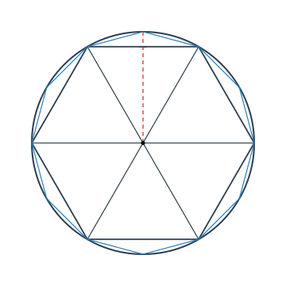
将差数的三分之一
$$\frac{1}{3}\left( 314\frac{64}{625} - 313\frac{584}{625} \right) = \frac{29}{625}$$加到 $100 \cdot S\left(\frac{1}{192}\right)$ 上去，便得到了当时最精确的圆周率
$$\pi \approx \frac{1}{100}\left( 314\frac{64}{625} + \frac{29}{625} \right) = 3.1416.$$后人发现，他用的增量 $\frac{29}{625}$ 与 $\bar{S}(h)$ 表达式中对 $S\left(\frac{h}{2}\right)$ 的修正量
$$\frac{S\left(\frac{h}{2}\right) - S(h)}{3} = \frac{314\frac{64}{625} - 313\frac{584}{625}}{3} = \frac{35}{625}$$相当接近，因此有理由认为，他在当时已经掌握了某种与外推方法类似的计算技术. 如果单纯由圆的内接正多边形的面积来计算，那要算至圆的内接正 3072 边形方能达到这样的精度，计算中包含着许多开方运算，这在用算筹计算的魏晋时代（阿拉伯数字尚未传入），其工作量之大简直无法想象.
我们用一个饶有趣味的问题结束本节.
证明：$e$ 是无理数.
用反证法. 假设 $e$ 是有理数，那么显而易见，一定存在充分大的自然数 $m$，使得 $(m!)e$ 是正整数.
在 $e^x$ 的 Taylor 公式
$$e^x = 1 + x + \frac{x^2}{2!} + \frac{x^3}{3!} + \cdots + \frac{x^n}{n!} + \frac{e^{\theta x}}{(n+1)!}x^{n+1}, \quad \theta \in (0, 1)$$中，将 $n$ 取为 $m$，并令 $x = 1$. 由于 $e^x$ 在整个实数范围都满足定理 5.3.2 的条件，即有
$$e = 1 + 1 + \frac{1}{2!} + \frac{1}{3!} + \cdots + \frac{1}{m!} + \frac{e^\theta}{(m+1)!}, \quad \theta \in (0, 1).$$两边同乘上 $m!$，便得到
$$(m!)e = (m!)\left( 1 + 1 + \frac{1}{2!} + \frac{1}{3!} + \cdots + \frac{1}{m!} \right) + \frac{e^\theta}{m+1},$$即
$$(m!)e - (m!)\left( 1 + 1 + \frac{1}{2!} + \frac{1}{3!} + \cdots + \frac{1}{m!} \right) = \frac{e^\theta}{m+1}.$$按假设，等式的左端是正整数.
但由于 $e^x$ 是单调增加函数，而 $\theta \in (0, 1)$，因此
$$1 < e^\theta < 3,$$代入上式的右端，就得到估计式
$$\frac{1}{m+1} < \frac{e^\theta}{m+1} < \frac{3}{m+1}.$$于是，对于任意正整数 $m \ge 2$，都有 $\frac{e^\theta}{m+1} \in (0, 1)$，也就是说，上述等式的右端绝不可能是正整数，这样就导出了矛盾.
所以假设 $e$ 是有理数不成立，即 $e$ 是无理数. 证毕
习 题 5.4
- 求下列函数在 $x = 0$ 处的 Taylor 公式（展开到指定的 $n$ 次）：
- $f(x) = \frac{1}{\sqrt[3]{1-x}}, \quad n = 4$；
- $f(x) = \cos(x+\alpha), \quad n = 4$；
- $f(x) = \sqrt{2+\sin x}, \quad n = 3$；
- $f(x) = e^{\sin x}, \quad n = 4$；
- $f(x) = \tan x, \quad n = 5$；
- $f(x) = \ln(\cos x), \quad n = 6$；
- $f(x) = \begin{cases} \frac{x}{e^x-1}, & x \ne 0, \\ 1, & x = 0, \end{cases} \quad n = 4$；
- $f(x) = \begin{cases} \ln\frac{\sin x}{x}, & x \ne 0, \\ 0, & x = 0, \end{cases} \quad n = 4$；
- $f(x) = \sqrt{1-2x+x^3} - \sqrt[3]{1-3x+x^2}, \quad n = 3$.
- 求下列函数在指定点处的 Taylor 公式：
- $f(x) = -2x^3 + 3x^2 - 2, \quad x_0 = 1$；
- $f(x) = \ln x, \quad x_0 = e$；
- $f(x) = \ln x, \quad x_0 = 1$；
- $f(x) = \sin x, \quad x_0 = \frac{\pi}{6}$；
- $f(x) = \sqrt{x}, \quad x_0 = 2$.
- 通过对展开式及其余项的分析，说明用 $$\ln 2 = \ln\left.\frac{1+x}{1-x}\right|_{x=\frac{1}{3}} \approx \left. 2\left( x + \frac{x^3}{3} + \frac{x^5}{5} + \cdots + \frac{x^{2n-1}}{2n-1} \right)\right|_{x=\frac{1}{3}}$$ 比用 $$\ln 2 = \left.\ln(1+x)\right|_{x=1} \approx \left.\left( x - \frac{x^2}{2} + \frac{x^3}{3} - \frac{x^4}{4} + \cdots + (-1)^{n-1}\frac{x^n}{n} \right)\right|_{x=1}$$ 效果好得多的两个原因.
- 利用上题的讨论结果，不加计算，判别用哪个公式计算 $\pi$ 的近似值效果更好，为什么？
- $\frac{\pi}{4} = \arctan 1 \approx \left.\left[ x - \frac{x^3}{3} + \frac{x^5}{5} - \cdots + (-1)^n \frac{x^{2n+1}}{2n+1} \right]\right|_{x=1}$；
- $\frac{\pi}{4} = 4\arctan\frac{1}{5} - \arctan\frac{1}{239}$（Machin 公式） $$\approx \left. 4\left[ x - \frac{x^3}{3} + \cdots + (-1)^n \frac{x^{2n+1}}{2n+1} \right]\right|_{x=\frac{1}{5}} - \left.\left[ x - \frac{x^3}{3} + \cdots + (-1)^n \frac{x^{2n+1}}{2n+1} \right]\right|_{x=\frac{1}{239}}.$$
- 利用 Taylor 公式求近似值（精确到 $10^{-4}$）：
- $\lg 11$；
- $\sqrt[3]{e}$；
- $\sin 31^\circ$；
- $\cos 89^\circ$；
- $\sqrt[5]{250}$；
- $(1.1)^{1.2}$.
- 利用函数的 Taylor 公式求极限：
- $\lim_{x \to 0} \frac{e^x \sin x - x(1+x)}{x^3}$；
- $\lim_{x \to 0^+} \frac{a^x + a^{-x} - 2}{x^2} \quad (a > 0)$；
- $\lim_{x \to 0} \left( \frac{1}{x} - \csc x \right)$；
- $\lim_{x \to +\infty} \left( \sqrt[5]{x^5+x^4} - \sqrt[5]{x^5-x^4} \right)$；
- $\lim_{x \to \infty} \left[ x - x^2\ln\left(1 + \frac{1}{x}\right) \right]$；
- $\lim_{x \to 0} \frac{1}{x}\left( \frac{1}{x} - \frac{1}{\tan x} \right)$；
- $\lim_{x \to +\infty} x^{\frac{3}{2}}(\sqrt{x+1} + \sqrt{x-1} - 2\sqrt{x})$；
- $\lim_{x \to +\infty} \left[ \left( x^3 - x^2 + \frac{x}{2} \right)e^{\frac{1}{x}} - \sqrt{x^6-1} \right]$.
- 利用 Taylor 公式证明不等式：
- $x - \frac{x^2}{2} < \ln(1+x) < x - \frac{x^2}{2} + \frac{x^3}{3}, \quad x > 0$；
- $(1+x)^\alpha < 1 + \alpha x + \frac{\alpha(\alpha-1)}{2}x^2, \quad 1 < \alpha < 2, \; x > 0$.
- 判断下列函数所表示的曲线是否存在渐近线，若存在的话求出渐近线方程：
- $y = \frac{x^2}{1+x}$；
- $y = \frac{2x}{1+x^2}$；
- $y = \sqrt{6x^2 - 8x + 3}$；
- $y = (2+x)e^{\frac{1}{x}}$；
- $y = \frac{e^x + e^{-x}}{2}$；
- $y = \ln\frac{1+x}{1-x}$；
- $y = x + \operatorname{arccot} x$；
- $y = \sqrt[3]{(x-2)(x+1)^2}$；
- $y = \arccos\frac{1-x^2}{1+x^2}$；
- $y = x^5\left( \cos\frac{1}{x} - e^{-\frac{1}{2x^2}} \right)$；
- $y = x^2\left( x e^{\frac{1}{3x}} - \sqrt[3]{x^3+x^2} \right)$；
- $y = x^2\left( x e^{\frac{1}{2x}} - \sqrt{x^2+x} \right)$.
-
- 设 $0 < x_1 < \frac{\pi}{2}, \; x_{n+1} = \sin x_n$（$n = 1, 2, \ldots$），证明：
(i) $\lim_{n \to \infty} x_n = 0$； (ii) $x_n^2 \sim \frac{3}{n} \quad (n \to \infty)$.
- 设 $y_1 > 0, \; y_{n+1} = \ln(1+y_n)$（$n = 1, 2, \ldots$），证明：
(i) $\lim_{n \to \infty} y_n = 0$； (ii) $y_n \sim \frac{2}{n} \quad (n \to \infty)$.
- 设 $0 < x_1 < \frac{\pi}{2}, \; x_{n+1} = \sin x_n$（$n = 1, 2, \ldots$），证明：
- 设函数 $f(x)$ 在 $[0, 1]$ 上二阶可导，且满足 $|f''(x)| \le 1$，$f(x)$ 在区间 $(0, 1)$ 内取到最大值 $\frac{1}{4}$. 证明： $$|f(0)| + |f(1)| \le 1.$$
- 设 $f(x)$ 在 $[0, 1]$ 上二阶可导，且在 $[0, 1]$ 上成立 $$|f(x)| \le 1, \quad |f''(x)| \le 2.$$ 证明在 $[0, 1]$ 上成立 $|f'(x)| \le 3$.
- 设函数 $f(x)$ 在 $[0, 1]$ 上二阶可导，且 $f(0) = f(1) = 0, \; \min_{0 \le x \le 1} f(x) = -1$. 证明： $$\max_{0 \le x \le 1} f''(x) \ge 8.$$
- 设 $f(x)$ 在 $[a, b]$ 上二阶可导，$f(a) = f(b) = 0$，证明： $$\max_{a \le x \le b} |f(x)| \le \frac{1}{8}(b-a)^2 \max_{a \le x \le b} |f''(x)|.$$
§5 应用举例
微分学具有非常重要的实际应用价值. 作为入门，我们在本节中先初步看一些例子，使读者获得一定的感性认识，并能够举一反三地解决一些简单的实际问题，为今后进一步深入学习奠定基础.
首先我们利用微分学知识来讨论函数的极值问题.
5.1 函数的极值与最大值、最小值
极值问题
设 $x_0$ 为 $f(x)$ 的一个极值点（即极大值点或极小值点），如果 $f(x)$ 在 $x_0$ 处可导，则由 Fermat 引理，必有 $f'(x_0) = 0$. 这就是说，$f(x)$ 的全部极值点必定都在使得 $f'(x) = 0$ 和使得 $f'(x)$ 不存在的点集之中. 使 $f'(x) = 0$ 的点称为 $f(x)$ 的驻点. 所以，我们可以先求出 $f(x)$ 的驻点（即使得 $f'(x) = 0$ 的点）与使得 $f'(x)$ 不存在的点，再进行判别.
设函数 $f(x)$ 在 $x_0$ 点的某一邻域中有定义，且 $f(x)$ 在 $x_0$ 点连续.
(1) 设存在 $\delta > 0$，使得 $f(x)$ 在 $(x_0 - \delta, x_0)$ 与 $(x_0, x_0 + \delta)$ 上可导，
(i) 若当 $x \in (x_0 - \delta, x_0)$ 时 $f'(x) \ge 0$，而当 $x \in (x_0, x_0 + \delta)$ 时 $f'(x) \le 0$，则 $x_0$ 是 $f(x)$ 的极大值点；
(ii) 若当 $x \in (x_0 - \delta, x_0)$ 时 $f'(x) \le 0$，而当 $x \in (x_0, x_0 + \delta)$ 时 $f'(x) \ge 0$，则 $x_0$ 是 $f(x)$ 的极小值点；
(iii) 若 $f'(x)$ 在 $x_0$ 的左右两侧保持同号，则 $x_0$ 不是 $f(x)$ 的极值点.
(2) 设 $f'(x_0) = 0$，且 $f(x)$ 在 $x_0$ 点二阶可导，
(i) 若 $f''(x_0) < 0$，则 $x_0$ 是 $f(x)$ 的极大值点；
(ii) 若 $f''(x_0) > 0$，则 $x_0$ 是 $f(x)$ 的极小值点；
(iii) 若 $f''(x_0) = 0$，则 $x_0$ 可能是 $f(x)$ 的极值点，也可能不是 $f(x)$ 的极值点.
(1) 的结论显然，我们只证 (2).
因为 $f'(x_0) = 0$，由 Taylor 公式
$$f(x) = f(x_0) + \frac{f''(x_0)}{2!}(x - x_0)^2 + o((x - x_0)^2)$$得到
$$\frac{f(x) - f(x_0)}{(x - x_0)^2} = \frac{1}{2}f''(x_0) + \frac{o((x - x_0)^2)}{(x - x_0)^2}.$$因为当 $x \to x_0$ 时上式右侧第二项趋于 0，所以当 $f''(x_0) < 0$ 时，由极限的性质可知在 $x_0$ 点附近成立
$$\frac{f(x) - f(x_0)}{(x - x_0)^2} < 0,$$所以
$$f(x) < f(x_0),$$从而 $f(x)$ 在 $x_0$ 取极大值. 同样可讨论 $f''(x_0) > 0$ 的情况. 证毕
特别要注意，当 $f''(x_0) = 0$ 时无法据此判定 $x_0$ 是否为极值点. 例如 $x=0$ 是 $y=x^4$ 的极小值点，是 $y=-x^4$ 的极大值点，而不是 $y=x^3$ 的极值点. 但它们都满足 $y'(0) = 0$ 和
$y''(0) = 0$ 的条件.
求函数 $f(x) = \sqrt[3]{(2x - x^2)^2}$ 的极值.
函数 $f(x)$ 的定义域为 $(-\infty, +\infty)$. 由
$$f'(x) = \frac{4(1 - x)}{3\sqrt[3]{2x - x^2}}$$可知 $f(x)$ 的驻点为 $x = 1$，使得 $f'(x)$ 不存在的点为 $x = 0$ 和 $x = 2$. 由于
(1) 当 $-\infty < x < 0$ 时，$f'(x) < 0$；
(2) 当 $0 < x < 1$ 时，$f'(x) > 0$；
(3) 当 $1 < x < 2$ 时，$f'(x) < 0$；
(4) 当 $2 < x < +\infty$ 时，$f'(x) > 0$，
由定理 5.5.1 中 (1) 的结论知 $f(0) = 0$ 是极小值，$f(1) = 1$ 是极大值，$f(2) = 0$ 是极小值.
求函数 $f(x) = (x^2 - 1)^3 + 1$ 的极值.
函数 $f(x)$ 的定义域为 $(-\infty, +\infty)$. 计算得
$$f'(x) = 6x(x^2 - 1)^2.$$它的驻点为 $x = 0, x = 1, x = -1$. 计算二阶导数：$f''(0) = 6 > 0$，由定理 5.5.1 中 (2) 的结论知 $f(0) = 0$ 是极小值. 在 $x = 1$ 与 $x = -1$ 处 $f''(1) = f''(-1) = 0$，但由于 $(x^2 - 1)^2 \ge 0$，$f'(x)$ 在它们左、右侧保持同号，由定理 5.5.1 中 (1) 的结论，知 $f(1)$ 和 $f(-1)$ 都不是函数 $f(x)$ 的极值.
最值问题
在自然科学、生产技术、经济管理等领域，经常需要研究如何花费最小代价去获取最大收益的问题，这在许多情况下，可以归结为求一个函数在某一范围内的最大值或最小值问题.
根据连续函数的性质，闭区间上的连续函数必定能取到最大值与最小值. 需要注意的是，如果去掉函数的连续性或者将闭区间改为开区间，函数有可能取不到最大值或最小值.
函数的最大值与最小值统称为函数的最值，使函数取到最大值（或最小值）的点称为函数的最大值点（或最小值点），也称为函数的最值点.
函数的极大值与极小值反映的是函数的一种局部性质，而函数的最大值与最小值反映的是函数在某一范围内的一种整体性质.
对于一个定义于闭区间 $[a, b]$ 上的函数 $f(x)$ 来说，区间的两个端点 $a$ 与 $b$ 是有可能成为它的最值点的. 同时，若最值点属于开区间 $(a, b)$ 的话，那它一定是函数的极值点. 因此，我们只要按照前面在极值问题中所述的方法，找出所有 $f(x)$ 的驻点与使 $f'(x)$ 不存在的点，再加上区间的端点，从中找出使函数取最大值或最小值的点就可以了.
求函数 $f(x) = \sqrt[3]{(2x - x^2)^2}$ 在区间 $[-1, 4]$ 上的最大值与最小值.
由例 5.5.1，已知函数 $f(x)$ 在区间 $[-1, 4]$ 上的极大值点 $x = 1$，极大值为
$f(1) = 1$，极小值点为 $x = 0$ 与 $x = 2$，两个极小值都为 0. 为了求最大值与最小值，还须加上函数在区间端点的值 $f(-1) = \sqrt[3]{9}$ 与 $f(4) = 4$. 对这些值进行比较，就得到函数 $f(x)$ 在区间 $[-1, 4]$ 上的最大值点为 $x = 4$，最大值为 $f(4) = 4$，最小值点为 $x = 0$ 与 $x = 2$，最小值为 0.
5.2 优化问题
用铝合金制造容积固定的圆柱形罐头，罐身（侧面和底部）用整块材料拉制而成，顶盖是另装上去的，设顶盖的厚度是罐身厚度的三倍. 问如何确定它的底面半径和高才能使得用料最省？
设罐身的厚度为 $\delta$，则顶盖的厚度是 $3\delta$.
如图 5.5.1 所示，记罐头的容积为 $V$，底面半径为 $r$，则高为 $h = \frac{V}{\pi r^2}$. 于是，罐身的用料为
$$\delta(\pi r^2 + 2\pi rh) = \delta\left(\pi r^2 + \frac{2V}{r}\right),$$顶盖的用料为
$$3\delta \cdot \pi r^2,$$因此问题化为求函数
$$U(r) = 4\delta\pi r^2 + \frac{2\delta V}{r}, \quad r \in (0, +\infty)$$的最小值.
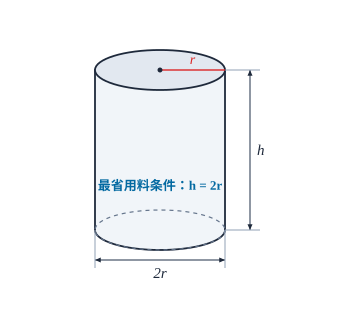
对 $U(r)$ 求导，
$$U'(r) = 8\delta\pi r - \frac{2\delta V}{r^2} = \frac{2\delta(4\pi r^3 - V)}{r^2}.$$令 $U'(r) = 0$，得惟一驻点 $r_0 = \sqrt[3]{\frac{V}{4\pi}}$. 由于
$$U''(r) = 8\delta\pi + \frac{4\delta V}{r^3} > 0, \quad r \in (0, +\infty),$$所以 $r_0$ 是 $U(r)$ 的最小值点.
这时，相应的高为
$$h_0 = \frac{V}{\pi r_0^2} = \frac{4\pi r_0^3}{\pi r_0^2} = 4r_0 = 2(2r_0).$$也就是说，当罐头的高为底面直径的 2 倍时用料最省.
用同样的方法可以推出，若圆柱形的有盖容器是用厚薄相同的材料制成的，那么当它的底面直径和高相等的时候用料最省. 许多圆柱形的日常用品，如漱口杯、保温桶等，都是采用这样的比例（或近似这样的比例）设计的.
下面的例题说明，通过求解最值问题可以获得一些重要的理论结果.
设一辆汽车在平原上的行驶速度为 $v_1$，在草原上的行驶速度为 $v_2$，现要求它以最短的时间从平原上的 $A$ 点到达草原上的 $B$ 点，问应该怎么走？
显然，在同一种地形上，汽车应沿直线行进，所以它从 $A$ 到 $B$ 的运动轨迹应是由两条直线段组成的折线.
设汽车的行驶路径如图 5.5.2 所示，那么它的整个行驶时间应为
$$T(x) = \frac{\sqrt{h_1^2 + x^2}}{v_1} + \frac{\sqrt{h_2^2 + (l - x)^2}}{v_2}, \quad x \in [0, l].$$由
$$T'(x) = \frac{x}{v_1\sqrt{h_1^2 + x^2}} - \frac{l - x}{v_2\sqrt{h_2^2 + (l - x)^2}}$$可知 $T'(0) < 0, T'(l) > 0$. 由于
$$T''(x) = \frac{h_1^2}{v_1(h_1^2 + x^2)^{3/2}} + \frac{h_2^2}{v_2(h_2^2 + (l - x)^2)^{3/2}} > 0,$$所以 $T'(x)$ 是单调递增的，它在 $(0, l)$ 内有惟一的零点 $x_0$. 因此 $x_0$ 是 $T(x)$ 的惟一的极小值点，也就是它的最小值点. 这时我们得到关系式
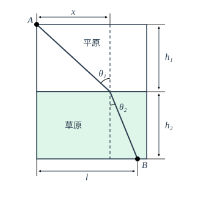
如图 5.5.2，记 $\theta_1$ 和 $\theta_2$ 分别为行进路径在两区域内与界面法线的夹角，则上式即为
$$\frac{\sin\theta_1}{v_1} = \frac{\sin\theta_2}{v_2}, \quad \text{或} \quad \frac{\sin\theta_1}{\sin\theta_2} = \frac{v_1}{v_2}.$$由于光线在传播过程中所花的时间总是最短的，即光线总是走“捷径”的（Fermat 原理），所以光线的传播问题在本质上与本题是相同的. 我们可以将本题中汽车的行驶换成光线的传播，将平原和草原换成光线传播过程中的两种不同的介质，这样就得到了光学中著名的折射定律（Snell 定律）：
$$\frac{\sin\theta_1}{\sin\theta_2} = \frac{v_1}{v_2} = n_{12}.$$最值问题也在社会科学的许多方面，尤其是经济活动分析中得到了广泛的应用，因为经济活动中最重要的目标之一，就是用最小的花费去赢取最大的利润. 下面我们来看一个已对实际情况作了简化的例子.
对产品从生产到销售的过程进行经济核算时，至少要涉及三个方面的问题：成本、收益和利润. 设产量为 $Q$，则总成本 $C(Q)$ 一般可以表示成两部分的和
$$C(Q) = f + v(Q) \cdot Q.$$这里，$f > 0$ 称为固定成本（如厂房和设备的折旧、工作人员的工资、财产保险费等），一般可以认为与产量的大小无关，而 $v(Q) \cdot Q$ 称为可变成本（如原材料、能源等），$v(Q)$ 是一个正值函数，表示在总共生产 $Q$ 件产品的情况下，每生产一件的可变成本，最简单的情形是 $v(Q) \equiv v_0 = \text{正常数}$.
$C(Q)$ 的导数 $C'(Q)$ 称为边际成本，其经济学意义是在总共生产 $Q$ 件产品的情况下，生产第 $Q+1$ 件（或增加单位产量）产品的成本.
总收益 $E(Q) = p(Q) \cdot Q$ 是指把 $Q$ 件产品销售出去后得到的收入，这里 $p(Q)$ 称为价格函数，表示在总共生产 $Q$ 件产品的情况下，每件产品的销售价格. 一般说来，生产量越大，每件产品的价格就越便宜，因此 $p(Q)$ 是 $Q$ 的单调减少函数.
$E(Q)$ 的导数 $E'(Q)$ 相应地称为边际收益，其经济学意义是在总共生产销售了 $Q$ 件产品的情况下，销售出第 $Q+1$ 件（或增加单位销售量）产品所得到的收入.
总收益减去总成本便是总利润. 将利润函数记为 $P(Q)$，则
$$P(Q) = E(Q) - C(Q).$$当 $E(Q)$ 和 $C(Q)$ 二阶可导时，由定理 5.5.1，就可以得到经济学中的“最大利润原理”：
“当且仅当边际成本与边际收益相等，并且边际成本的变化率大于边际收益的变化率时，可取得最大利润.”
这里的第一个条件即为
$$P'(Q) = E'(Q) - C'(Q) = 0,$$而第二个条件可表示为
$$P''(Q) = E''(Q) - C''(Q) < 0,$$请读者自行思考它们的经济学意义.
比如，某产品的价格 $p(Q) = a - bQ$（$a, b > 0, Q < \frac{a}{b}$），成本 $C(Q) = f + v_0 Q$，于是利润
$$P(Q) = E(Q) - C(Q) = -bQ^2 + (a - v_0)Q - f,$$要使得整个生产经营不亏本，显然在定价时须保证 $a - v_0 > 0$.
容易算出，当产量 $Q_0 = \frac{a - v_0}{2b}$ 时有 $P'(Q_0) = 0$ 和 $P''(Q_0) = -2b < 0$，这时所获取的利润为最大.
从数学角度讲，经济活动中的最值问题与其他类型最值问题本质上是相同的，因此，读者不难举一反三，用类似的数学原理和数学工具去分析求解这一类问题，这里不再详细展开了.
5.3 数学建模
随着科学技术的发展，越来越多的人认识到了“高技术本质上是一种数学技术”这一精辟的观点. 近半个世纪以来，数学与电子计算机技术相结合，在解决自然科学、工程技术乃至社会科学等各个领域的实际问题中大显身手，取得了令人瞩目的成绩.
要用数学技术去解决实际问题，首先必须将所考虑的现实问题通过“去粗取精，去伪存真”的深入分析和研究，用数学工具将它归结为一个相应的数学问题，这个过程称为数学建模，所得到的数学问题称为数学模型.
数学建模可以使用多种数学方法，甚至对同一现实问题可以建立不同形式的数学模型，而其中最重要、最常用的数学工具是微分. 作为数学建模过程的示例，这里我们利用已学过的微分知识，来导出一些简单的数学模型. 在本书的以后各部分中，我们还将利用新的知识导出一些较为复杂的数学模型，并设计一部分习题，为读者今后系统地学习数学模型奠定基础.
设 $p(t)$ 是某地区的人口数量函数，那么由第四章的 §2，该地区在单位时间中的人口增长数，即人口增长速率应为人口数量函数的导数 $p'(t)$.
显然，某一时刻的人口数量越多，在单位时间中的人口增长数也就越多. 通过对当时资料的分析，Malthus 假定这两者成比例关系，设比例系数为 $\lambda$（可以由已有的资料定出），于是他在 1798 年提出了人类历史上的第一个人口模型
$$\begin{cases} p'(t) = \lambda p(t), \\ p(t_0) = p_0. \end{cases}$$这里，像“$p'(t) = \lambda p(t)$”这种含有未知函数的导数（或微分）的方程称为微分方程，而“$p(t_0) = p_0$”称为微分方程的初值条件，代表在某个给定的 $t_0$ 时刻的实际人口数.
将“$p'(t) = \lambda p(t)$”写成微分形式
$$\frac{\mathrm{d}p}{p} = \lambda \mathrm{d}t,$$把它看成是由某个隐函数
$$f(p) = g(t)$$两边求微分的结果，由一阶微分的形式不变性和基本初等函数的微分表，即得
$$f(p) = \ln p + C_1, \quad g(t) = \lambda t + C_2,$$其中 $C_1, C_2$ 是常数. 于是
$$\ln p = \lambda t + C,$$也就是
$$p = C_0 e^{\lambda t},$$其中 $C_0 = e^C$. 利用初值条件 $p(t_0) = p_0$，可以定出
$$C_0 = p_0 e^{-\lambda t_0},$$最终得到人口数量函数
$$p(t) = p_0 e^{\lambda(t - t_0)}.$$以上求未知函数 $p(t)$ 的过程称为解微分方程，其结果“$p(t) = p_0 e^{\lambda(t - t_0)}$”称为该微分方程的满足初值条件的解.
实际问题所归结的数学模型一般都以各种微分方程的形式出现，以后将会有专门的课程来学习微分方程及其求解的问题. 下面我们再举一个简单的例子.
在供水、化工生产等过程中，都有一个对液体进行过滤，除去渣滓的问题. 现以过滤式净水器的使用为例，来建立相应的数学模型.
要对液体进行过滤，首先要设置一个由过滤物质组成的过滤层（称为滤芯）. 在过滤的过程中，水中的杂质沉积在过滤层上，也成为过滤层的一部分. 假设杂质在水中的含量和进水的压力都是常数，那么杂质沉积的厚度与累积的总滤出流量 $Q(t)$ 成正比，同时，流速的减少与杂质沉积的厚度也成正比. 若设初始时刻的流速为 $q_0$，由导数的意义即知 $t$ 时刻的流速应当是 $Q'(t)$，从而流速的减少量为 $q_0 - Q'(t)$，由上所述，它应与总滤出流量 $Q(t)$ 成正比. 这样，就得到了它的数学模型为
$$\begin{cases} Q'(t) = q_0 - \lambda Q(t), \\ Q(0) = 0. \end{cases}$$作代换 $Q_1(t) = q_0 - \lambda Q(t)$，便有
$$\begin{cases} Q_1'(t) = -\lambda Q_1(t), \\ Q_1(0) = q_0. \end{cases}$$这是关于 $Q_1(t)$ 的微分方程，它与例 5.5.7 所得到的微分方程的形式完全相同.
采用例 5.5.7 类似的方法，可以求出
$$Q_1(t) = q_0 e^{-\lambda t},$$即得到累积的总滤出流量为
$$Q(t) = \frac{1}{\lambda}(q_0 - Q_1(t)) = \frac{q_0}{\lambda}(1 - e^{-\lambda t}).$$因为
$$\lim_{t \to +\infty} Q(t) = \frac{q_0}{\lambda} \quad \text{及} \quad \lim_{t \to +\infty} Q'(t) = 0,$$所以我们可以知道，在定压的过滤过程中，并不是想滤多少就可以不受限制地滤多少，其流出的总量是有上限 $\frac{q_0}{\lambda}$ 的. 在流量接近这个上限的时候，其流速将趋近于零，也就是说，此时杂质已沉积得过厚，需要清洗或更换滤芯了.
5.4 函数作图
在指定的坐标系中作出一个函数的图形，从而可以直观地去研究它的某些性态，这是很有实际意义的. 现在虽说有了电子计算机和许多数学软件，可以（用描点法）画出各种各样的函数图形，但用分析的方法勾勒出函数的大致形状仍然是数学研究中的重要手段之一.
函数作图的过程一般可分为以下几个步骤：
- 考察定义域与连续性：考察函数 $f(x)$ 的定义域及其在定义域内的连续性，找出函数的不连续点，并以这些点作分点，将定义域分成若干个区间，使函数在每个区间上连续.
- 一阶导数与单调性、极值：计算 $f'(x)$，找出 $f'(x)$ 的驻点与导数不存在的点，从而求出 $f(x)$ 的极值点与极值，并以这些点为分点，对区间进行再划分，使函数在每个区间上保持单调.
- 二阶导数与凸性、拐点：计算 $f''(x)$，找出所有使 $f''(x) = 0$ 的点与使 $f''(x)$ 不存在的点，从而求出 $f(x)$ 的拐点，并以这些点为分点，继续对区间进行再划分，使函数在每个区间上保持固定的凸性.
- 列表汇总：对上述 (1), (2), (3) 三个步骤所得到的结果列出表格，在表格中标出函数在每个分点上的函数值（如果有定义的话），以及函数在每个区间上的单调性与凸性.
- 求渐近线：求出曲线 $y = f(x)$ 的渐近线，包括水平渐近线、垂直渐近线和斜渐近线.
通过上述步骤，我们就可以在平面坐标系上标出函数曲线的一些特殊点，如极值点与拐点等（如有需要的话，还可补充计算若干个点上 $f(x)$ 的值并定位于坐标系中），再根据曲线的凸性与渐近线的位置，就可作出函数 $y = f(x)$ 的图像.
须注意的是，在作图之前，应该先考察函数的几何性质如奇偶性、周期性等，若 $f(x)$ 是奇函数或偶函数，那么只要画出一半图形，而另一半可通过对称画出；对于周期函数，只要画出一个周期的图形就可以了，而其余部分可通过周期延拓画出.
我们按上述步骤来作几个函数的图像.
作出函数 $y = \frac{1}{\sqrt{2\pi}} e^{-\frac{x^2}{2}}$ 的图像.
因为 $f(x) = \frac{1}{\sqrt{2\pi}} e^{-\frac{x^2}{2}}$ 是定义于整个实数域上的偶函数，我们只要考察 $x \ge 0$ 就可以了. 求 $f(x)$ 的一阶导数和二阶导数，有
$$f'(x) = -\frac{1}{\sqrt{2\pi}} x e^{-\frac{x^2}{2}}, \quad f''(x) = \frac{1}{\sqrt{2\pi}} e^{-\frac{x^2}{2}} (x^2 - 1).$$$f(x)$ 的可能极值点为 $f'(x)$ 的零点 $x = 0$，可能的拐点的横坐标为 $f''(x)$ 的零点 $x = 1$.
经检验，$f'(x)$ 在 $x = 0$ 的右侧和左侧的符号分别为负和正，所以 $x = 0$ 是 $f(x)$ 的极大值点；$f''(x)$ 在 $x = 1$ 的右侧和左侧的符号分别为正和负，所以 $(1, f(1))$ 是曲线 $y = f(x)$ 的拐点.
根据上述结果即可列出下面的表格：
| $x$ | 0 | $(0, 1)$ | 1 | $(1, +\infty)$ |
|---|---|---|---|---|
| $f'(x)$ | 0 | $-$ | $-$ | $-$ |
| $f''(x)$ | $-$ | $-$ | 0 | $+$ |
| $f(x)$ | 极大值 $\frac{1}{\sqrt{2\pi}}$ | $\searrow$（上凸） | 拐点 $\left(1, \frac{1}{\sqrt{2\pi e}}\right)$ | $\searrow$（下凸） |
（我们用符号“$\nearrow$（上凸）”表示函数在这一区间单调增加且上凸，“$\nearrow$（下凸）”表示函数在这一区间单调增加且下凸，“$\searrow$（上凸）”表示函数在这一区间单调减少且上凸，“$\searrow$（下凸）”表示函数在这一区间单调减少且下凸.）
当 $x \to +\infty$ 时，$y = \frac{1}{\sqrt{2\pi}} e^{-\frac{x^2}{2}} \to 0$，因此 $y = 0$ 即 $x$ 轴是 $y = f(x)$ 的水平渐近线，容易看出，曲线 $y = f(x)$ 不再有其他的渐近线.
根据这些信息，便不难作出函数 $y = f(x)$ 在右半平面的图像，然后利用对称性，就可以作出函数的整个图像了（如图 5.5.3）.
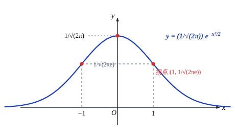
以后学习概率论时会知道，$y = \frac{1}{\sqrt{2\pi}} e^{-\frac{x^2}{2}}$ 是一个非常重要的函数.
作出函数 $y = \frac{(x-1)^2}{3(x+1)}$ 的图像.
由于函数 $f(x) = \frac{(x-1)^2}{3(x+1)}$ 的定义域为 $(-\infty, -1) \cup (-1, +\infty)$，可知函数的图像包含两条曲线，它们被直线 $x = -1$ 左右分开.
先对 $f(x)$ 求导：
$$f'(x) = \frac{2(x-1) \cdot 3(x+1) - 3(x-1)^2}{9(x+1)^2} = \frac{(x+3)(x-1)}{3(x+1)^2}.$$可知 $f(x)$ 的驻点为 $x = -3$ 和 $x = 1$. 经检验，$f'(x)$ 在 $x = -3$ 的右侧和左侧的符号分别为负和正，在 $x = 1$ 的右侧和左侧的符号分别为正和负，所以 $x = -3$ 是 $f(x)$ 的极大值点，$x = 1$ 是 $f(x)$ 的极小值点.
再求 $f(x)$ 的二阶导数：
$$f''(x) = \frac{8}{3(x+1)^3}.$$因为 $f''(x)$ 在定义域中没有零点，所以曲线上没有拐点.
根据上述结果即可列出下面的表格：
| $x$ | $(-\infty, -3)$ | $-3$ | $(-3, -1)$ | $-1$ | $(-1, 1)$ | 1 | $(1, +\infty)$ |
|---|---|---|---|---|---|---|---|
| $f'(x)$ | $+$ | 0 | $-$ | 无定义 | $-$ | 0 | $+$ |
| $f''(x)$ | $-$ | $-$ | $-$ | 无定义 | $+$ | $+$ | $+$ |
| $f(x)$ | $\nearrow$（上凸） | 极大值 $-\frac{8}{3}$ | $\searrow$（上凸） | 无定义 | $\searrow$（下凸） | 极小值 0 | $\nearrow$（下凸） |
由例 5.4.14，$y = \frac{(x-1)^2}{3(x+1)}$ 的斜渐近线方程为
$$y = \frac{x}{3} - 1.$$又因为
$$\lim_{x \to -1^+} \frac{(x-1)^2}{3(x+1)} = +\infty, \quad \lim_{x \to -1^-} \frac{(x-1)^2}{3(x+1)} = -\infty,$$所以 $x = -1$ 是它的垂直渐近线，且根据上面两个极限式，可以知道曲线在 $x = -1$ 的左右两侧以怎样的方式趋近于渐近线的.
根据这些信息，再求出若干个特殊点上 $f(x)$ 的函数值，就不难作出函数 $y = f(x)$ 的图形了（如图 5.5.4）.
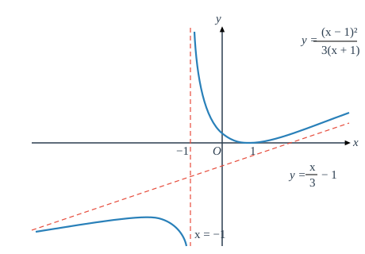
作出函数 $y = \sqrt[3]{x^3 - x^2 - x + 1}$ 的图像.
函数
$$f(x) = \sqrt[3]{x^3 - x^2 - x + 1} = \sqrt[3]{(x-1)^2(x+1)}$$的定义域为 $(-\infty, +\infty)$.
先对 $f(x)$ 求导：
$$f'(x) = [\sqrt[3]{(x-1)^2(x+1)}]' = \frac{1}{3}\left( 2\frac{\sqrt[3]{x+1}}{\sqrt[3]{x-1}} + \frac{\sqrt[3]{(x-1)^2}}{\sqrt[3]{(x+1)^2}} \right)$$ $$= \frac{2(x+1) + (x-1)}{3\sqrt[3]{(x-1)(x+1)^2}} = \frac{3x+1}{3\sqrt[3]{(x-1)(x+1)^2}}.$$可知在 $x = 1$ 与 $x = -1$ 处 $f'(x)$ 不存在，而 $f'(x)$ 有零点 $x = -\frac{1}{3}$. 经检验 $f'(x)$ 在这三个点两侧的符号，即可知道 $x = -1$ 不是函数的极值点，$x = -\frac{1}{3}$ 是函数的极大值点，$x = 1$ 是函数的极小值点.
再对 $f(x)$ 求二阶导数：
$$f''(x) = \left[ \frac{3x+1}{3\sqrt[3]{(x-1)(x+1)^2}} \right]' = -\frac{8}{9\sqrt[3]{(x-1)^4(x+1)^5}}.$$即知 $f(x)$ 的二阶导数没有零点，但在 $x = \pm 1$ 处 $f''(x)$ 不存在. 由于 $f''(x)$ 在 $x = -1$ 的两侧符号相反，而在 $x = 1$ 的两侧符号相同，所以 $(-1, 0)$ 是曲线的拐点，而 $(1, 0)$ 不是曲线的拐点.
根据上述结果即可列出下面的表格：
| $x$ | $(-\infty, -1)$ | $-1$ | $\left(-1, -\frac{1}{3}\right)$ | $-\frac{1}{3}$ | $\left(-\frac{1}{3}, 1\right)$ | 1 | $(1, +\infty)$ |
|---|---|---|---|---|---|---|---|
| $f'(x)$ | $+$ | 不存在 | $+$ | 0 | $-$ | 不存在 | $+$ |
| $f''(x)$ | $+$ | 不存在 | $-$ | $-$ | $-$ | 不存在 | $-$ |
| $f(x)$ | $\nearrow$（下凸） | 拐点 $(-1, 0)$ | $\nearrow$（上凸） | 极大值 $\frac{\sqrt[3]{32}}{3}$ | $\searrow$（上凸） | 极小值 0 | $\nearrow$（上凸） |
由例 5.4.15，$y = \sqrt[3]{x^3 - x^2 - x + 1}$ 的斜渐近线方程为
$$y = x - \frac{1}{3}.$$根据这些信息，再求出若干个特殊点上 $f(x)$ 的函数值，就不难作出函数 $y = f(x)$ 的图形了（如图 5.5.5）.
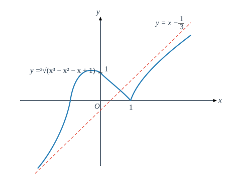
习 题 5.5
- 求下列函数的极值点，并确定它们的单调区间：
- $y = 2x^3 - 3x^2 - 12x + 1$；
- $y = x + \sin x$；
- $y = \sqrt{x}\ln x$；
- $y = x^n e^{-x} \quad (n \in \mathbb{N}^*)$；
- $y = \frac{(x+1)^3}{(x-1)^2}$；
- $y = \frac{1-x}{1+x^2}$；
- $y = 3x^5 - 5x^3 + 2$；
- $y = x - \ln(1+x)$；
- $y = \cos^3 x + \sin^3 x$；
- $y = \arctan x - x$；
- $y = 2e^x + e^{-2x}$；
- $y = 2 - \sqrt[3]{(x-1)^2}$；
- $y = \frac{1+3x}{\sqrt{4+5x^2}}$.
- 求下列曲线的拐点，并确定函数的保凸区间：
- $y = x^3 + 3x^2 - 9x + 5$；
- $y = x + \sin x$；
- $y = \sqrt{1+x^2}$；
- $y = x e^{-x}$；
- $y = \sqrt[3]{\frac{(x+1)^2}{x-2}}$；
- $y = \frac{1-x}{1+x^2}$；
- $y = x - \ln(1+x)$；
- $y = \arctan x - x$；
- $y = (x+1)^4 + e^x$；
- $y = \ln(1+x^2)$；
- $y = e^{\arctan x}$；
- $y = x + \sqrt{x-1}$.
- 设 $f(x)$ 在 $x_0$ 处二阶可导，证明：$f(x)$ 在 $x_0$ 处取到极大值（极小值）的必要条件是 $f'(x_0) = 0$ 且 $f''(x_0) \le 0$（$f''(x_0) \ge 0$）.
- 设 $f(x) = (x-a)^n \varphi(x)$，$\varphi(x)$ 在 $x = a$ 连续且 $\varphi(a) \ne 0$，讨论 $f(x)$ 在 $x = a$ 处的极值情况.
- 设 $f(x)$ 在 $x = a$ 处有 $n$ 阶连续导数，且 $f'(a) = f''(a) = \cdots = f^{(n-1)}(a) = 0, \; f^{(n)}(a) \ne 0$，讨论 $f(x)$ 在 $x = a$ 处的极值情况.
- 如何选择参数 $h > 0$，使得 $$y = \frac{h}{\sqrt{\pi}} e^{-h^2 x^2}$$ 在 $x = \pm \sigma$（$\sigma > 0$ 为给定的常数）处有拐点？
- 求 $y = \frac{x^2}{x^2 + 1}$ 在拐点处的切线方程.
- 作出下列函数的图像（渐近线方程可利用上一节习题 8 的结果）：
- $y = \frac{x^2}{1+x}$；
- $y = \frac{2x}{1+x^2}$；
- $y = \sqrt{6x^2 - 8x + 3}$；
- $y = (2+x)e^{\frac{1}{x}}$；
- $y = \frac{e^x + e^{-x}}{2}$；
- $y = \ln\frac{1+x}{1-x}$；
- $y = x + \operatorname{arccot} x$；
- $y = \sqrt[3]{(x-2)(x+1)^2}$；
- $y = \arccos\frac{1-x^2}{1+x^2}$.
- 求下列数列的最大项：
- $\left\{ \frac{n^{10}}{2^n} \right\}$；
- $\{\sqrt[n]{n}\}$.
- 设 $a, b$ 为实数，证明： $$\frac{|a+b|}{1+|a+b|} \le \frac{|a|}{1+|a|} + \frac{|b|}{1+|b|}.$$
- 设 $a \ge \ln 2 - 1$ 为常数，证明：当 $x \ge 0$ 时， $$x^2 - 2ax + 1 \le e^x.$$
- 设 $k > 0$，试问当 $k$ 为何值时，方程 $\arctan x - kx = 0$ 有正实根？
- 对 $a$ 作了 $n$ 次测量后获得了 $n$ 个近似值 $\{a_k\}_{k=1}^n$，现在要取使得 $$\sum_{k=1}^n (a_k - \xi)^2$$ 达到最小的 $\xi$ 作为 $a$ 的近似值，$\xi$ 应如何取？
- 证明：对于给定了体积的圆柱体，当它的高与底面的直径相等的时候表面积最小.
- 在底为 $a$ 高为 $h$ 的三角形中作内接矩形，矩形的一条边与三角形的底边重合，求此矩形的最大面积.
- 求内接于椭圆 $\frac{x^2}{a^2} + \frac{y^2}{b^2} = 1$，边与椭圆的轴平行的面积最大的矩形.
- 将一块半径为 $r$ 的圆铁片剪去一个圆心角为 $\theta$ 的扇形后做成一个漏斗，问 $\theta$ 为何值时漏斗的容积最大？
- 要做一个容积为 $V$ 的有盖的圆柱形容器，上下两个底面的材料价格为每单位面积 $a$ 元，侧面的材料价格为每单位面积 $b$ 元，问直径与高的比例为多少时造价最省？
- 要建造一个变电站 $M$ 向 $A$、$B$ 两地送电（如图 5.5.6），$M$ 与 $A$ 之间的电缆每千米 $a$ 元，与 $B$ 之间的电缆每千米 $b$ 元，为使总投资最小，问变电站 $M$ 的位置应满足什么性质？
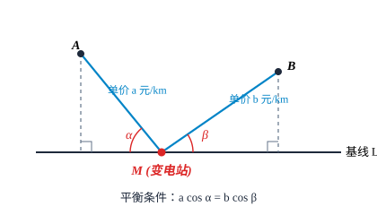
图 5.5.6
§6 方程的近似求解
6.1 解析方法和数值方法
求方程
$$f(x) = 0$$的解（或根），就是要寻找一个数 $x^*$，使得满足
$$f(x^*) = 0.$$这是实际应用中大量遇到的问题.
求方程的解主要方法有两种：解析方法和数值方法.
解析方法也称为公式法，它是将方程的解表达为方程的系数的函数形式，只要把待求解的方程的系数代入表达式，就可以求出方程的解. 如果不考虑运算中的四舍五入所产生的误差，那么在理论上，解析方法所得到的解是精确的，我们将这个解称为解析解或精确解，解析方法也因此被称为精确方法.（但由于真正运算时不可能不产生误差，因此从求解实际问题来说，不存在真正的精确方法.）
例如，对于一元二次方程
$$ax^2 + bx + c = 0 \quad (a \ne 0),$$可以得到它的两个解
$$x_{1,2} = \frac{-b \pm \sqrt{b^2 - 4ac}}{2a}.$$这就是在用解析方法求解方程.
但十分遗憾的是，除了我们在中学里已学过的简单的三角方程、对数方程和指数方程等情况之外，能精确求解的方程的数量和种类与实际需要求解的问题的数量相比，只能说是九牛之一毛. 例如，形如
$$a_n x^n + a_{n-1} x^{n-1} + \cdots + a_1 x + a_0 = 0 \quad (a_n \ne 0)$$的多项式，可以算得是最简单的一类函数了，而著名法国数学家 Galois 在一个半世纪之前就证明了，当 $n \ge 5$ 时，对它不存在一般的求根公式. 因此，对于更为复杂的超越函数，就更不能指望有什么普遍适用的、可以求得精确解的公式了.
数值方法是一种求近似解的方法. 粗略地说，它无意去追究方程的解与系数本质上到底存在着什么样的联系，而只是设法去构造一个可实际计算的过程，并通过运行这个过程产生方程的精确解的一系列近似值. 在一定的条件下，这些近似值理论上将收敛于方程的精确解，因此可以用精度较高的近似值来代替精确解，我们称其数值解或近似解. 由于实际问题中提出的许许多多形态迥异的方程绝大多数都无法找到其解析解，因此，数值方法是用数学工具解决实际问题过程中的一个重要方法.
6.2 二分法
对于一个实的方程
$$f(x) = 0,$$最简单的数值求解方法无过于二分法，它的具体计算过程与用闭区间套定理证明闭区间上连续函数的零点存在定理的过程差不多.
设 $f(x)$ 在 $[a, b]$ 中连续，且成立
$$f(a) \cdot f(b) < 0,$$那么在 $[a, b]$ 至少存在着 $f(x)$ 的一个解 $x^*$. 假定 $f(x)$ 在 $[a, b]$ 中只有这个解，我们希望求出它的近似值 $\bar{x}$，满足
$$|\bar{x} - x^*| \le \varepsilon_0,$$这里 $\varepsilon_0$ 是预先给定的精度要求，如 $10^{-2}$、$10^{-4}$ 等等，那么可以这么进行：
- 令 $a_1 = a, b_1 = b$，取 $$x_1 = \frac{a_1 + b_1}{2}.$$
- 计算 $f(x_1)$：
若 $f(x_1) = 0$，则 $x_1$ 即为方程的解 $x^*$，取 $\bar{x} = x_1$，计算结束. - 否则，按如下规则得到区间 $[a_2, b_2]$：
(a) 若 $f(x_1) f(b_1) < 0$，令 $a_2 = x_1, b_2 = b_1$；
(b) 若 $f(x_1) f(b_1) > 0$，令 $a_2 = a_1, b_2 = x_1$.
易知 $x^* \in [a_2, b_2]$，且 $[a_2, b_2]$ 的长度是 $[a_1, b_1]$ 的一半. - 取 $x_2$ 为 $[a_2, b_2]$ 的中点.
- 类似地，若 $x_2$ 是方程的解 $x^*$，计算结束；否则可以得到 $[a_3, b_3]$.
- 重复上述过程……
假设执行过程中没有发生 $x_k$ 恰好等于 $x^*$ 的情况，由于对任何 $k$ 都有
$$b_k - a_k = \frac{b - a}{2^{k-1}},$$因此 $[a_k, b_k]$ 的中点 $x_k$ 与精确解 $x^*$ 的距离不会超过 $[a_k, b_k]$ 长度的一半，即成立
$$|x_k - x^*| \le \frac{b_k - a_k}{2} = \frac{b - a}{2^k},$$所以，当
$$\frac{b - a}{2^n} \le \varepsilon_0 \quad \text{即} \quad n \ge \log_2 \frac{b - a}{\varepsilon_0}$$时，必有
$$|x_n - x^*| \le \varepsilon_0,$$于是，$\bar{x} = x_n$ 便是符合精度要求的近似解.
6.3 Newton 迭代法与割线法
数值计算中常用的求近似值的方法是迭代法. 先将原来的方程
$$f(x) = 0$$化为等价的形式
$$x = F(x),$$所谓“等价”是指若 $x^*$ 是方程 $f(x) = 0$ 的解，则成立
$$x^* = F(x^*),$$反之亦然. 这里的 $F(x)$ 称为迭代函数.
取一个适当的初始值 $x_0$，按
$$x_{k+1} = F(x_k) \quad (k = 0, 1, 2, \cdots)$$产生序列 $\{x_k\}$（设每个 $x_k$ 都属于 $F(x)$ 的定义域），这样的计算过程称为迭代. 若在理论上成立
$$\lim_{k \to \infty} x_k = x^*,$$那么显然 $x^*$ 就是原方程的解，因此只要在迭代过程中，选取某个合适的 $x_n$ 作为 $\bar{x}$，就得到原方程的近似解了.（理论上，所选取的 $x_n$ 应满足精度要求
$$|x_n - x^*| \le \varepsilon_0,$$但 $x^*$ 是不知道的，所以实际计算时往往采用比较相邻两次的迭代值是否满足
$$|x_{k+1} - x_k| \le \varepsilon_0$$来决定迭代是否进行下去.）
构造迭代函数可以有各种各样的方法，比如，最简单的可以取成
$$F(x) = x \pm f(x).$$下面我们利用 Taylor 公式来举一个例子.
设 $f(x)$ 在含有 $x^*$ 的某个区间 $[a, b]$ 中具有二阶连续导数，且对于每个 $x \in [a, b]$，都有 $f'(x) \ne 0$. 作出 $f(x)$ 在 $x$ 处的 Taylor 公式，由于 $x^*$ 是方程 $f(x) = 0$ 的解，则有
$$0 = f(x^*) = f(x) + f'(x)(x^* - x) + \frac{f''(\xi)}{2}(x^* - x)^2,$$也即
$$x^* = x - \frac{f(x)}{f'(x)} - \frac{f''(\xi)}{2f'(x)}(x^* - x)^2.$$当 $x \to x^*$ 时，上式的最后一项是趋向于零的，因此有
$$\lim_{x \to x^*} \left[ x - \frac{f(x)}{f'(x)} \right] = x^* - \frac{f(x^*)}{f'(x^*)} = x^*.$$这样，
$$F(x) = x - \frac{f(x)}{f'(x)}$$就是一个满足 $x^* = F(x^*)$ 要求的迭代函数，由此得到迭代公式
$$x_{k+1} = x_k - \frac{f(x_k)}{f'(x_k)} \quad (k = 0, 1, 2, \cdots).$$这就是著名的 Newton 迭代法（简称 Newton 法）.
Newton 法具有明显的几何意义. 求解 $f(x) = 0$ 实际上是求曲线 $y = f(x)$ 与 $x$ 轴的交点的横坐标，曲线在 $x = x_k$ 处的切线方程为
$$y - f(x_k) = f'(x_k)(x - x_k),$$它与 $x$ 轴的交点的横坐标恰为
$$x_{k+1} = x_k - \frac{f(x_k)}{f'(x_k)},$$也就是说，Newton 法实质上是通过一系列的切线与 $x$ 轴的交点的横坐标，来逼近曲线与 $x$ 轴的交点的横坐标（如图 5.6.1），所以 Newton 迭代法也叫 Newton 切线法.
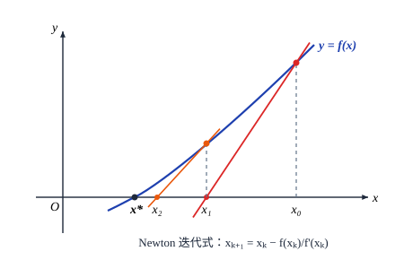
我们不加证明地给出如下结论：
设 $f(x)$ 在 $[a, b]$ 中有二阶连续导数，且满足条件
- (1) $f(a) \cdot f(b) < 0$；
- (2) $f'(x)$ 在 $(a, b)$ 保号；
- (3) $f''(x)$ 在 $(a, b)$ 保号.
取 $x_0$ 是 $a$ 和 $b$ 中满足
$$f(x_0) f''(x_0) > 0$$的那一个点，则以 $x_0$ 为初值的 Newton 迭代过程
$$x_{k+1} = x_k - \frac{f(x_k)}{f'(x_k)} \quad (k = 0, 1, 2, \cdots)$$产生的序列 $\{x_k\}$ 单调收敛于方程
$$f(x) = 0$$在 $[a, b]$ 中的惟一解.
这里，条件 (1) 保证了 $f(x)$ 在 $(a, b)$ 有解；条件 (2) 表明 $f(x)$ 在 $[a, b]$ 严格单调，因此 $f(x)$ 在 $(a, b)$ 中的解是惟一的；而条件 (3) 表示 $f(x)$ 在 $[a, b]$ 中保持固定的凸性，这保证了每一个 $x_{k+1}$ 都在同一方向上比 $x_k$ 更靠近 $x^*$（读者可以用作图的方法验证这一点），因此 $\{x_k\}$ 是一个单调有界数列，它必有极限，这个极限当然就是 $x^*$.
解方程
$$\ln x = \sin x.$$记 $f(x) = \ln x - \sin x$，考虑区间 $\left[ \frac{\pi}{2}, e \right]$，则有
$$f\left(\frac{\pi}{2}\right) = \ln \frac{\pi}{2} - 1 < 0, \quad f(e) = 1 - \sin e > 0,$$而
$$f'(x) = \frac{1}{x} - \cos x > 0 \quad \left(x \in \left(\frac{\pi}{2}, e\right)\right),$$ $$f''(x) = -\frac{1}{x^2} + \sin x > 0 \quad \left(x \in \left(\frac{\pi}{2}, e\right)\right),$$所以符合定理 5.6.1 的全部条件.
因为
$$f(e) f''(e) > 0,$$所以初值取为 $x_0 = e$，计算结果如下：
| $k$ | $x_k$ | $|x^* - x_k|$ |
|---|---|---|
| 1 | 2.257 815 620 636 622 89 | $3.87 \times 10^{-2}$ |
| 2 | 2.219 512 490 173 004 78 | $4.05 \times 10^{-4}$ |
| 3 | 2.219 107 195 173 873 23 | $4.63 \times 10^{-8}$ |
| 4 | 2.219 107 148 913 746 83 | $8.88 \times 10^{-16}$ |
最后，取 $\bar{x} = x_4 = 2.219\,107\,148\,913\,746\,83$ 作为 $x^*$ 的近似值.
从计算结果可以发现，每迭代一次，误差中的指数大致增加了一倍，这是当 $x_k$ 与 $x^*$ 很接近时，Newton 法的一个重要性质. 由 Taylor 公式容易导出
$$x^* - x_{k+1} = -\frac{f''(\xi)}{2f'(x_k)}(x^* - x_k)^2,$$这里 $\xi$ 在 $x^*$ 与 $x_k$ 之间，因此
$$\lim_{k \to \infty} \frac{|x^* - x_{k+1}|}{|x^* - x_k|^2} = \left| \frac{f''(x^*)}{2f'(x^*)} \right| = C.$$所以，我们称 Newton 法是一个二次收敛（也叫平方收敛）的迭代方法，或者说，Newton 迭代法的收敛速度是二次的.
当今世界上，可以说电子计算机是人类最重要的工具. 但任何一台高性能的计算机，归根结底只能对二进制数码进行加法和移位两种运算，从算术角度来讲，它只能进行加、减、乘三种运算，只不过它的运算速度极其惊人罢了.
那么，计算机是如何计算除法、开方乃至它所提供的其他各种基本初等函数的呢？主要有两种途径，一种是利用某些近似公式，如 Taylor 多项式（只要加、减、乘三种运算就足够了）等，而另一种就是通过用上述的 Newton 法解方程来达到目的的.
用 Newton 法求 $\sqrt{A}$，$A > 0$ 是一个给定的数.
显然，求 $\sqrt{A}$ 等价于求方程
$$f(x) = x^2 - A = 0$$的解 $x^*$ ($x \in \mathbb{R}^+$).
计算机首先自动寻找一个正整数 $n$，使得
$$(n - 1)^2 < A < n^2,$$然后取 $x_0 = n$，用 Newton 迭代
$$x_{k+1} = x_k - \frac{x_k^2 - A}{2x_k} = \frac{1}{2} \left( x_k + \frac{A}{x_k} \right) \quad (k = 0, 1, 2, \cdots)$$得到序列 $\{x_k\}$，可以验证，在区间 $[n - 1, n]$ 上定理 5.6.1 的条件全部满足，因此 $x_k \to x^* = \sqrt{A}$.
下面是以 $x_0 = 3$ 为初值求 $\sqrt{7}$ 的计算结果，只要做十余次四则运算——这在计算机上只是一瞬间的事，就得到了精度在 $O(10^{-17})$ 以上的近似值：
| $k$ | $x_k$ | $|x_k - \sqrt{7}|$ |
|---|---|---|
| 1 | 2.666 666 666 666 666 52 | $2.09 \times 10^{-2}$ |
| 2 | 2.654 833 333 333 333 48 | $8.20 \times 10^{-5}$ |
| 3 | 2.645 751 312 335 958 17 | $1.27 \times 10^{-9}$ |
| 4 | 2.645 751 311 064 590 72 | $< 10^{-17}$ |
在计算机上做除法和求 $n$ 次方根 $\sqrt[n]{A}$ 的思路是类似的，都是先将其转化为方程求解问题，再用 Newton 法迭代出近似解，具体步骤留给读者思考.
最后再做几点说明：
- 定理 5.6.1 的条件是充分的而不是必要的，读者可以自行举例来说明这一点. 但是条件不满足时迭代确实有可能不收敛，图 5.6.2 给出了条件 (2) 和 (3) 分别不满足时 Newton 法不收敛的情形. 在图 (a) 中 $f'(x) \ne 0$ 被破坏，$f(x)$ 在 $[a, b]$ 中有一个极值点，而在图 (b) 中，$f''(x) \ne 0$ 被破坏，$[a, b]$ 中有 $y = f(x)$ 的一个拐点. 从图中可以看到，这时迭代序列在两个固定点处无休止地来回跳动，迭代过程以失败而告终.
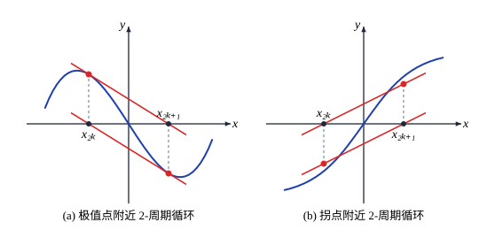
图 5.6.2 - Newton 迭代法是求解函数方程最基本和最重要的方法之一，它可以推广到由若干个方程构成的方程组的求解上去，在理论研究上有着重要的意义. 同时，在实际求解方程中，它常常又是首选的方法. 由于迭代函数比较简单，除了一些导函数特别复杂的情况之外，每做一步迭代所化的运算量是比较小的，当初值选得好时收敛速度相当快，编程也比较容易.
- 与 Newton 法相比，二分法最突出的优点是对求解函数 $f(x)$ 的要求较低，只要连续就行了，因此有些性质较差的函数只能用二分法而不能用 Newton 法来求解. 另外，它每做一步迭代所化的计算量也较小（只需要计算函数值），并且可以根据精度的要求事先确定执行的步数 $n \ge \log_2 \frac{b - a}{\varepsilon_0}$，编程和上机实现都比较简单. 但它的主要缺点是收敛速度不快. 例如，要达到例 5.6.1 中 $x_4$ 的同样精度，用二分法需进行 50 多次对分.
- 当函数 $f(x)$ 的导函数不太容易计算时，可以用
$$\frac{f(x_k) - f(x_{k-1})}{x_k - x_{k-1}}$$
近似代替 $f'(x_k)$，这时的迭代公式成为
$$x_{k+1} = x_k - \frac{f(x_k)(x_k - x_{k-1})}{f(x_k) - f(x_{k-1})}.$$
取初值 $x_0, x_1$，连接曲线上的两点 $(x_{k-1}, f(x_{k-1}))$ 与 $(x_k, f(x_k))$ 作割线，以割线与 $x$ 轴的交点的横坐标作为新的近似值 $x_{k+1}$（如图 5.6.3），因此这个方法也叫割线法或弦割法.
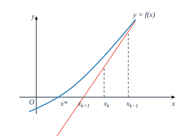
图 5.6.3割线法满足
$$\lim_{k \to \infty} \frac{|x^* - x_{k+1}|}{|x^* - x_k|^p} = C,$$其中 $p = \frac{1+\sqrt{5}}{2} \approx 1.618$，因此收敛速度稍慢于 Newton 法，但由于它每做一步迭代只需要计算一次函数值，运算量小，且又避免了导数运算，因而也是一种很常用的数值求解方法.（在求解由多个方程联立的方程组时更是如此.）
计算实习题
（在教师的指导下，编制程序在电子计算机上实际计算）
- 用二分法求下列方程的一个近似解（精确到小数点后第 6 位）：
- $x^3 + 3x - 5 = 0, \quad x^* \in [1, 2]$；
- $x = e^{-x}, \quad x^* \in \left[\frac{1}{2}, \ln 2\right]$；
- $x^2 = \cos x, \quad x^* \in \left[\frac{\pi}{4}, \frac{3\pi}{4}\right]$；
- $7x^2 - 3x + \frac{4}{x} - 30 = 0, \quad x^* \in [2, 2.5]$.
- 用 Newton 法求下列方程的近似解（精确到小数点后第 10 位）：
- $x^3 - x + 4 = 0$；
- $x + \frac{1}{x^2} = 10 \quad (x > 1)$；
- $x \lg x = 1$；
- $x + e^x = 0$；
- $\frac{x}{2} = \sin x \quad (x > 0)$.
- 仿照例 5.6.2，用 Newton 法导出计算机上求 $A^{\frac{1}{n}}$（$A > 0$，$n$ 为非零整数）和 $\frac{1}{A}$ 的算法（即只用加、减、乘三种运算的算法），并实际计算下列各值：
- $\sqrt[3]{2}$；
- $\sqrt[5]{9}$；
- $\frac{1}{7}$；
- $\frac{1}{\pi}$.
- 当 $\varepsilon = 0.2$ 时，计算 Kepler 方程 $$y - x - \varepsilon \sin y = 0 \quad (0 < \varepsilon < 1)$$ 对应于 $x = \frac{k\pi}{8} \quad (k = 1, 2, \cdots, 8)$ 的 $y$ 的近似值.
- 求方程 $$\tan x = x$$ 的最小的三个正根，精确到 $10^{-2}$.
- 求方程 $$\cot x = \frac{x}{2}$$ 的两个正根，精确到 $10^{-2}$.